Tools
Tools in Koha all perform some sort of action. Often many of the items listed under Tools in Koha are referred to as ‘Reports’ in other library management systems.
- Get there: More > Tools
Patrons and circulation
Patron lists
- Get there: More > Tools > Patrons and circulation > Patron lists
Patron lists are a way to store a group of patrons for easy modification via the batch patron modification tool or reporting.
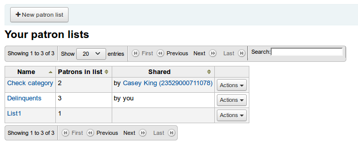
To create a new list of patrons click the ‘New patron list’ button
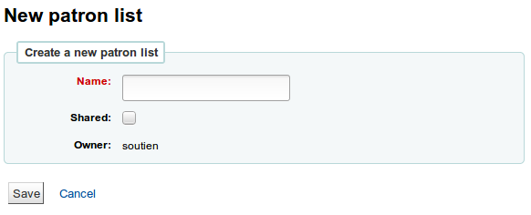
Enter a list name.
Checking the ‘Shared’ box will make this list visible to all users with the manage_patron_lists permission.
Save the list.
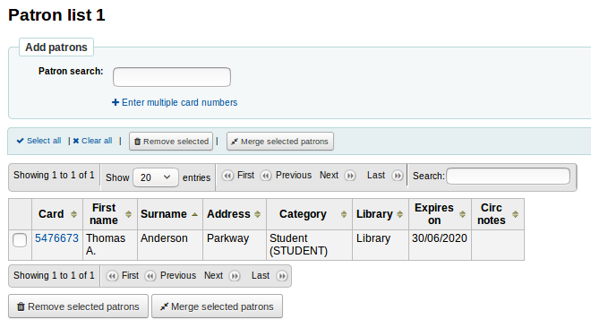
Each list has an ‘Actions’ menu with more list options.
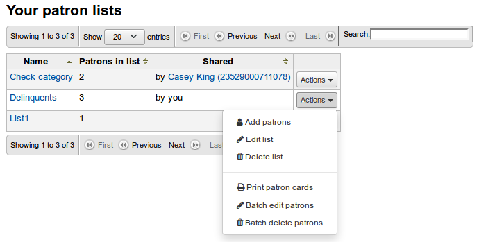
To add patrons to the list click the ‘Add patrons’ link in the ‘Actions’ menu.
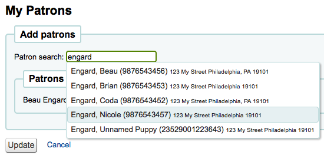
Enter the patron’s name or cardnumber in the search box and click on the right result to add the patron.
Alternatively, you can click on the ‘Enter multiple card numbers’ link and scan (or type in) barcodes in the box.
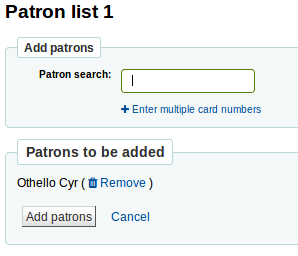
Once you have all of the patrons you would like to add you can click the ‘Add patrons’ button to save them to the list.
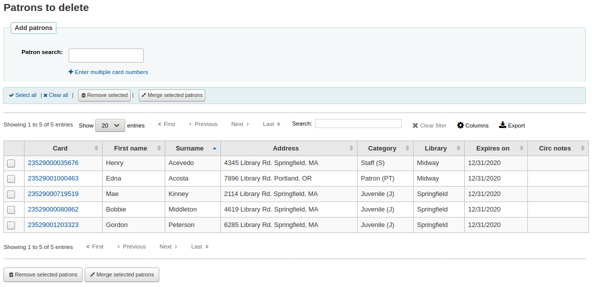
Note
- You can customize the columns of this table in the ‘Table settings’ section of the Administration module (table id: patron-list-table).
Patron clubs
- Get there: More > Tools > Patrons and circulation > Patron clubs
Patron clubs create clubs in which patrons may be enrolled. It is useful for tracking summer reading programs, book clubs and other such clubs.
Important
Staff will need the clubs permissions to edit clubs, templates and enroll patrons. To learn how to set patron permissions, go to the patron permissions section of this manual.
Creating a new club template
Click on the ‘New club template’ button. Here you can add fields that can be filled out at the time a new club is created based on the template, or a new enrollment is created for a given club based on the template.
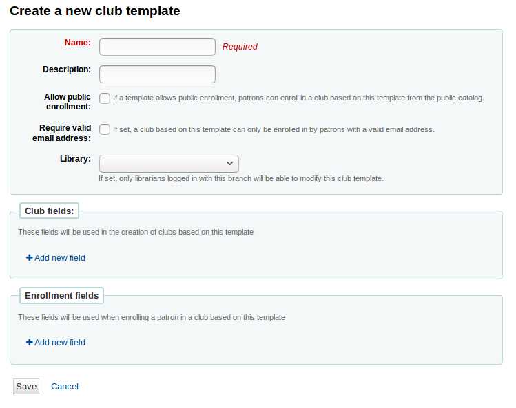
The name is required. This could be something like ‘Adult book club’, ‘Children’s book club’ or ‘Summer reading program’. Remember these templates will be starting point for each club you create.
The description can be any additional information.
Allow public enrollment: if this box is checked it will allow patrons to enroll in a club based on this template from the OPAC.
Require valid email address: if this box is checked only patrons with a valid email address can enroll. So they will need a email address to enroll.
The library drop down gives you the flexibility to let staff from specific branches create clubs with this template. If you let it set to blank, staff from any branch will be able to create a new club using this template.
Club fields: these fields will be used when creating a club based on this template. For example, this can be the name of the club, the name of the animator, the theme, etc.
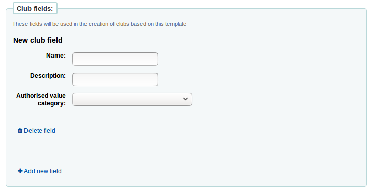
‘Name’ is the label of the field
‘Description’ is additional information about this field.
You can connect authorized values here.
Enrollment fields: you can add any additional fields you want to have filled out by your patrons when they enroll in a club base on this template.
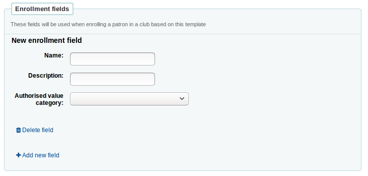
‘Name’ is the label of the field
‘Description’ is additional information about this field.
You can connect authorized values here.
Creating a new club based on a template
Click on the ‘New club’ dropdown menu and select the template you want to use. Here you can add information about a new club using a template you created.
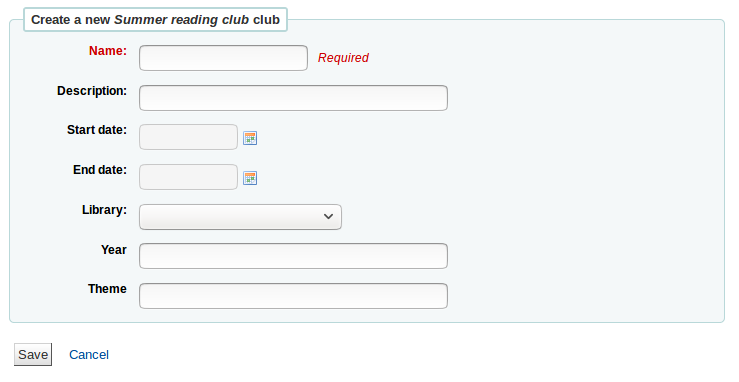
The name is required, this will be the name of the specific club using the template you created. For example, ‘Summer 2018 reading club’.
The description can be any additional information.
Start and End date will depict when this club runs, the entire duration of the club. Once the club expires, enrollment will not be possible.
The library drop down gives you the flexibility to enroll patrons from specific branches. If you let it set to blank, patrons from any branch will be able to enroll.
Enrolling a patron in a club from the staff client
To enroll a patron in a club from the staff client, go to the patron’s account.
On the ‘Details’ page or the ‘Check out’ page, click on the ‘Clubs’ tab. All ongoing clubs will be displayed in this tab.
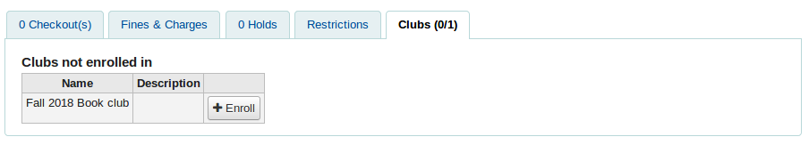
Click on the ‘Enroll’ button and fill in the fields.
You can also cancel enrollment by clicking on the cancel enrollment.
Enrolling a patron in a club from the OPAC
If you allow public enrollment, the club will be visible on the OPAC.
Patrons have to sign into their account. In the ‘Your summary’ section, they will be able to click on the ‘Clubs’ tab and enroll.
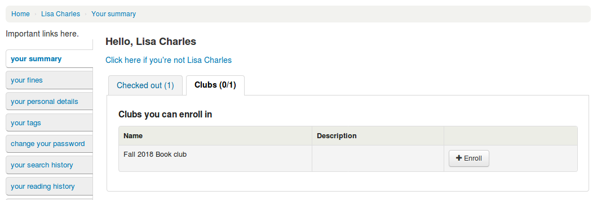
Viewing enrollments
You can monitor the enrollments in each club by going to the ‘Patron clubs’ tool page and choosing ‘Enrollment’ from the ‘Actions’ button.
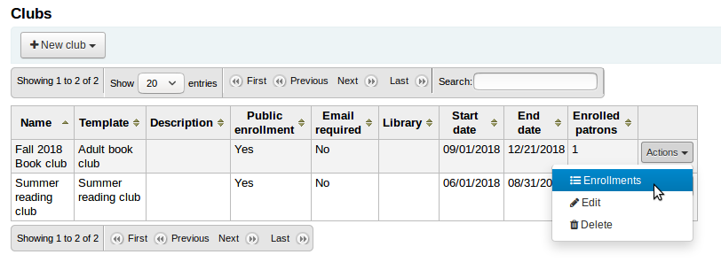
Placing a hold for a patron club
You can place holds for a patron club - holds are placed for club members in a random order.
To place a hold for a patron club:
- Go to the patron clubs tool (‘Home > Tools > Patron clubs’).
- Click the ‘Actions’ button for the club and select ‘Search to hold’.
- Search for a title and select a record.
- Select ‘Place hold for [CLUBNAME]’ from either the action links for the record, or from the ‘Place hold’ action in the menu bar.
- The place holds page is displayed and lists the club members.
- Click the ‘Place hold’ button.
Result: Holds are placed for all club members.
Comments
- Get there: More > Tools > Patrons and circulation > Comments
All comments added by patrons via the OPAC to bibliographic records require moderation by the librarians. If there are comments awaiting moderation they will be listed on the main page of the staff client below the module list:
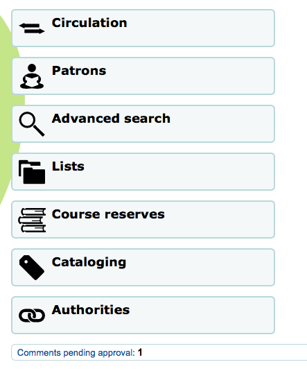
and next to the Comments tool on the Tools page
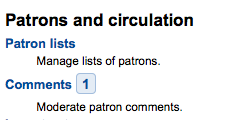
To moderate comments click on the notification on the main dashboard or go directly to the Comments tool and click ‘Approve’ or ‘Delete’ to the right of the comments awaiting moderation.
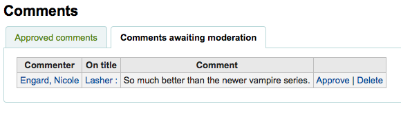
If there are no comments to moderate you will see a message saying just that
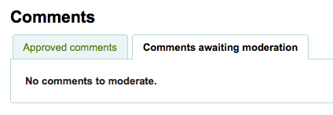
You can also review and unapprove comments you have approved in the past by choosing the ‘Approved comments’ tab
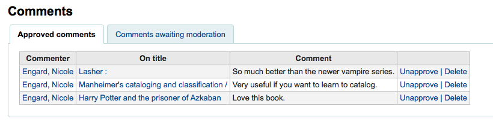
Patron import
- Get there: More > Tools > Patrons and circulation > Import patrons
The patron import tool can be used at any time to add patrons in bulk. It is commonly used in universities and schools when a new batch of students registers.
Creating a patron import file
You can download a blank CSV file with a header from the start page of the patron import tool that you can use as a template for your patron import. The header contains all fields that can be used with the patron import tool. You can delete fields and columns you don’t need with the exception of a few mandatory ones. When overlaying, if your new .csv includes blank columns, any existing values in patron records will be overwritten with blanks. It is best to remove any blank columns in a .csv to ensure no existing data is removed.
Important
cardnumber, surname, and all fields you have defined in the BorrowerMandatoryField preference are required and must match valid entries in your database.
Important
The ‘password’ should be stored in plaintext, and will be converted to a Bcrypt hash.
If your passwords are already encrypted, talk to your systems administrator about options
Important
Date formats should match your system preference, and must be zero-padded, e.g. ‘01/02/2008’. Alternatively you can supply dates in ISO format (e.g. ‘2008-12-01’).
Important
If your data contains special characters or diacritics, make sure your file is encoded in UTF-8. Otherwise, the special characters will not be imported correctly.
Note
If loading patron attributes, the ‘patron_attributes’ field should contain a comma-separated list of attribute types and values.
- The attribute type code and a colon should precede each value.
- For example: “INSTID:12345,BASEBALL:Cubs”
- This field must be wrapped in quotes if multiple values are defined.
- Since values can contain spaces, additional doubled-quotes may be required:
- “INSTID:12345,BASEBALL:Cubs,””BASEBALL:White Sox””
Note
It’s possible to set restrictions using the patron import tool. If the expiration date and comment match an existing restriction, the one in the import file will be skipped. So a patron import can be repeated multiple times without creating duplicate restrictions. But if one of the criteria is different, a new restriction will be added.
Importing patrons
Once you have created your file, you can use the patron import tool to bring the data into Koha.
Choose your CSV file
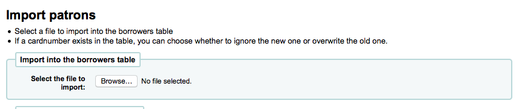
Choose to match on ‘cardnumber’ or ‘username’ to prevent adding of duplicate card numbers to the system. Additional matchpoints can be set up using patron attributes marked as unique.
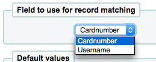
Next you can choose default values to apply to all patrons you are importing
- For example, if you’re importing patrons specific to one branch you can use the field on the import form to apply the branch code to all those you are importing.
Finally, you need to decide on what data you want to replace if there are duplicates.
- A matching record is found using the field you chose for matching criteria to prevent duplication
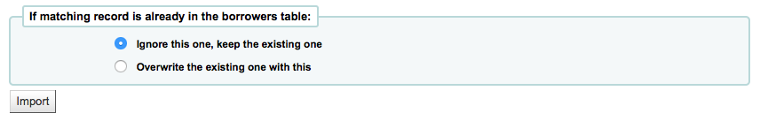
- When using patron attributes in your installation, you can choose how they are handled on import. You can either decide to always overlay all patron attributes or you choose to only replace patron attributes included in your import file. This will leave other attributes untouched.
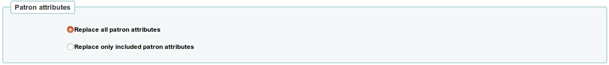
Notices & slips
- Get there: More > Tools > Patrons and circulation > Notices & slips
All notices and circulation receipts (or slips) generated by Koha can be customized using the Notices & slips tool. The system comes with several predefined templates that will appear when you first visit this tool.
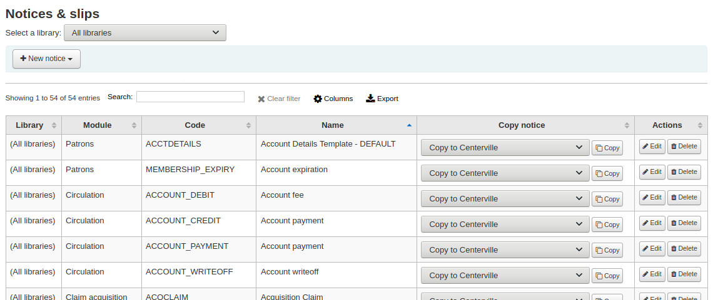
Note
- You can customize the columns of this table in the ‘Table settings’ section of the Administration module (table id: lettert).
Each notice can be edited, but only a few can be deleted, this is to prevent system errors should a message try to send without a template. Each notice and slip can be edited on a per library basis, by default you will see the notices for all libraries.
If you have a style you’d like applied to all slips you can point the SlipCSS preference to a stylesheet. The same is true for notices, using the NoticeCSS preference to define a stylesheet.
You will also want to review the Customising notices and slips wiki page for more information on formatting these notices.
Adding notices and slips
To add a new notice or slip
Click ‘New notice’
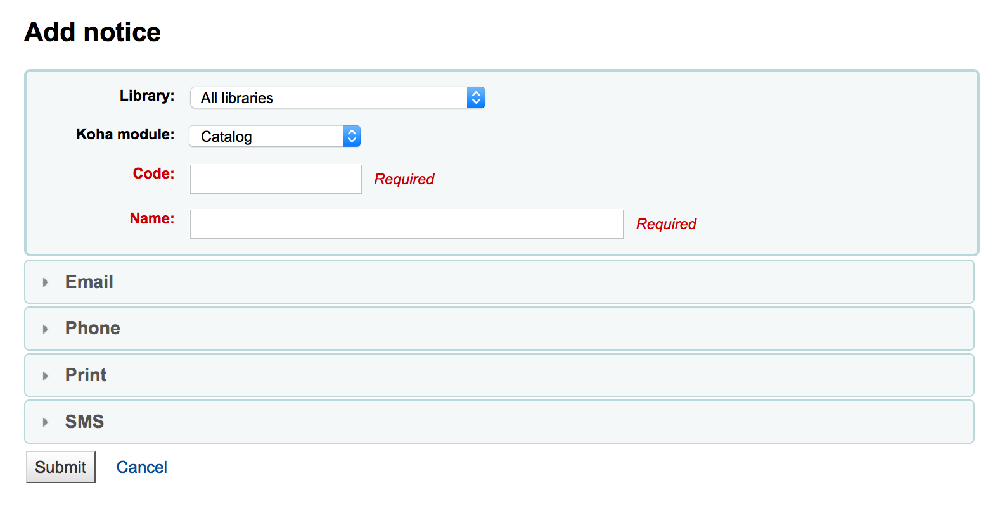
Choose which library this notice or slip is for
Important
Not all notices can be branch specific for more information review the Customising notices and slips wiki page.
Choose the module this notice is related to
The Code is limited to 20 characters
Use the name field to expand on your Code
Note
With overdue notices, be sure to put your branch name in the description as well so that it will be visible when setting up your triggers.
Next you can customize the notice for every possible delivery method
Every notice should have an Email template set for it
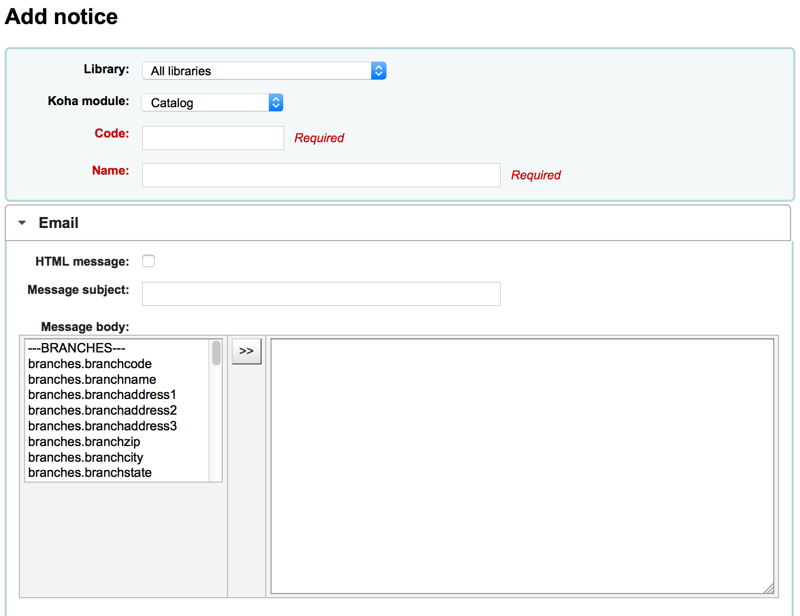
If you’re using the TalkingTechItivaPhoneNotification service you can set up a Phone notification
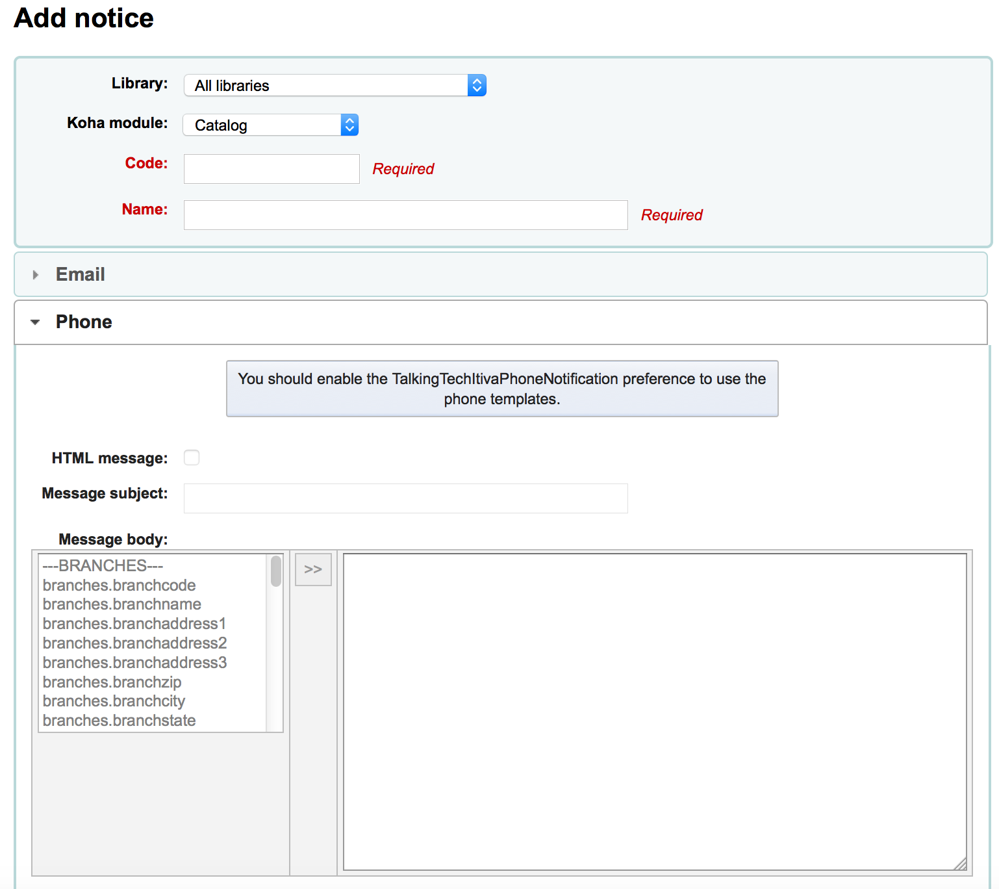
If you plan on printing this notice you can set the Print template next
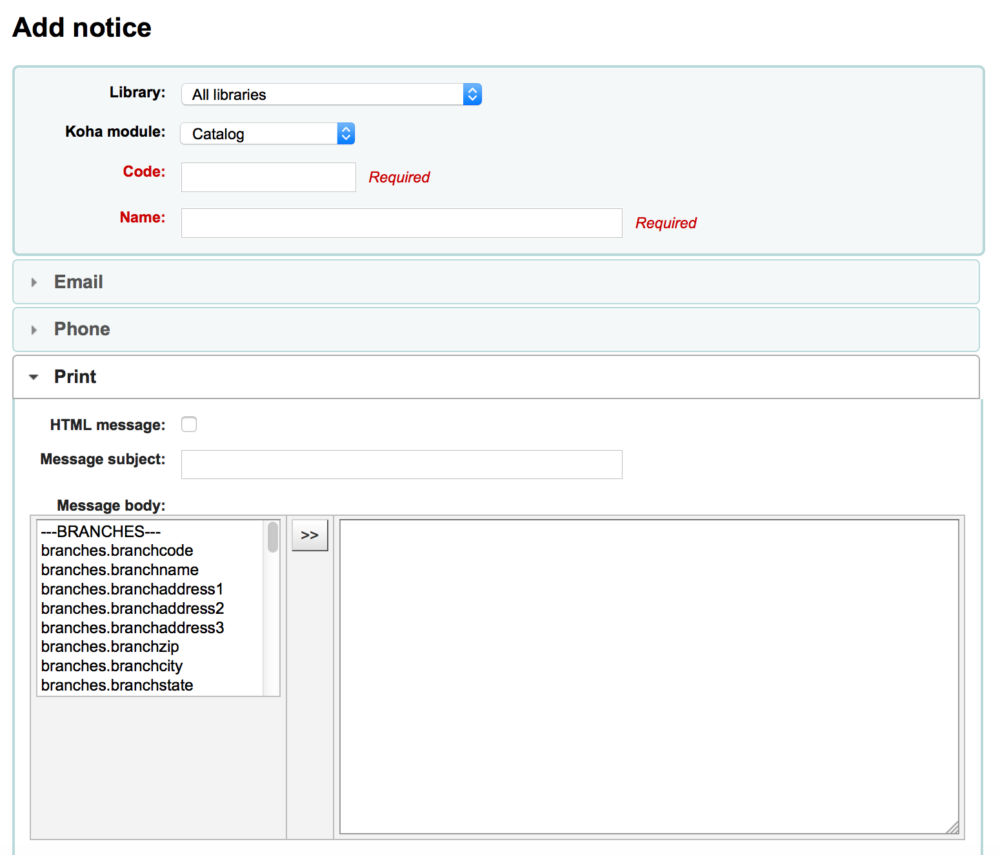
If you have enabled SMS notices with the SMSSendDriver preference you can set the text for your SMS notices next
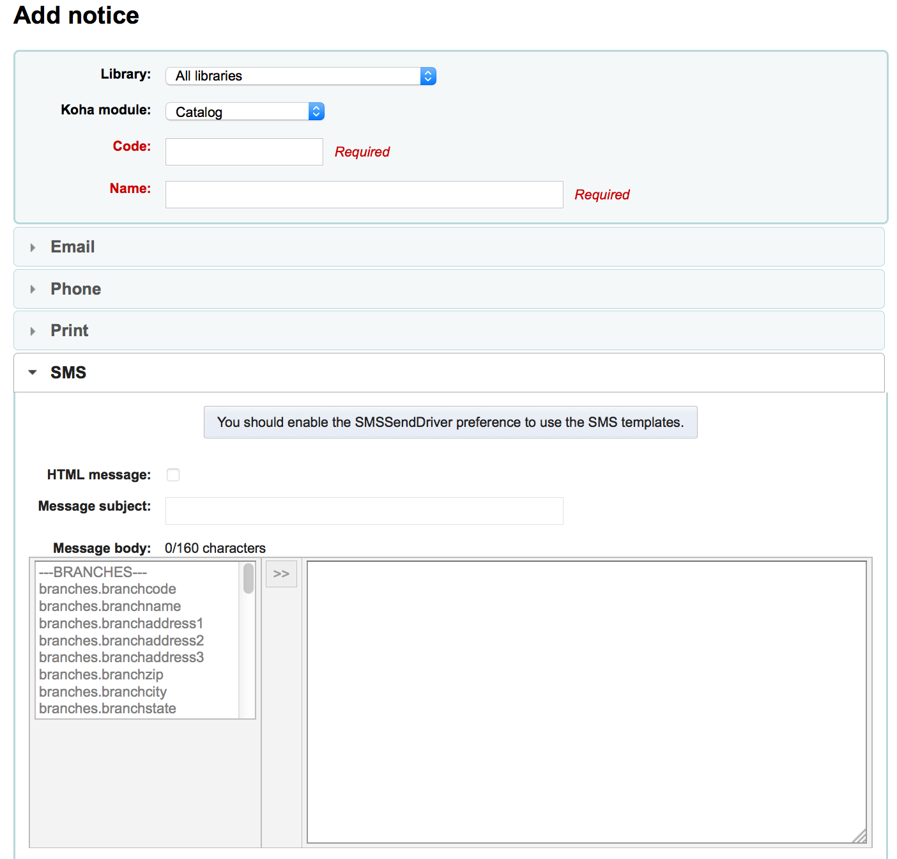
Each notice offers you the same options
If you plan on writing the notice or slip in HTML check the ‘HTML message’ box, otherwise the content will be generated as plain text
Message subject is what will appear in the subject line of the email
In the message body feel free to type whatever message you feel is best, use the fields on the left hand side to enter individualized data from the from database.
Note
Review the Customising notices and slips wiki page for more information.
Important
Overdue notices can use <<items.content>> tags by themselves, or use <item></item> to span all of the tags. Learn more about the Overdue notice markup
On overdue notices make sure to use <<items.content>> tags to print out the data related to all items that are overdue.
The other option, only for overdue notices, is to use the <item></item> tags to span the line so that it will print out multiple lines. One example for the <item></item> tag option is:
<item>”<<biblio.title>>” by <<biblio.author>>, <<items.itemcallnumber>>, Barcode: <<items.barcode>> , Checkout date: <<issues.issuedate>>, Due date: <<issues.date_due>> Fine: <<items.fine>> </item>
Important
Only the overdue notices take advantage of the <item></item> tags, all other notices referencing items need to use <<items.content>>
Note
To add today’s date you can use the <<today>> syntax
Note
If you don’t want to print the patron’s full name on your slips or notice you can enter data in the Other name or Initials field for each patron and use that value instead.
The system preference TranslateNotices will add tabs for each installed language to the notices editor. The notice defined in the ‘Default’ tab will be used if there is no preferred language set for a patron.
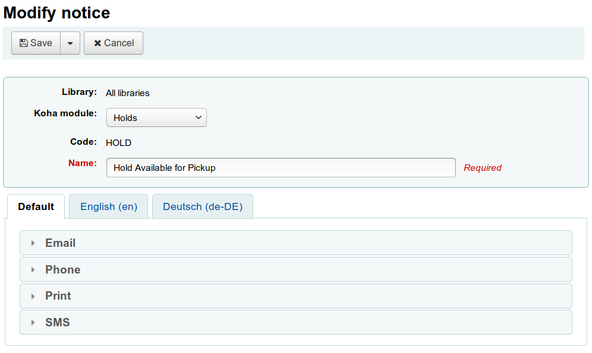
Preview notice templates
For some notices it is possible to preview the notice template showing how it would look to a specified patron for a particular item or record.
If a notice template is previewable the notice template header will contain a field to enter preview data
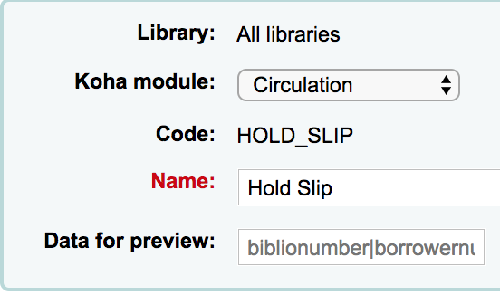
Fill in the necessary information for the template then click the Preview button below the message body. The preview dialog will indicate if there are any problems generating the notice template preview.
Overdue notice markup
When creating your overdue notices there are two tags in addition to the various database fields that you can use in your notices. You will also want to review the Customising notices and slips wiki page for information on formatting item information in these notices.
Important
These new tags only work on the overdue notices, not other circulation related notices at this time.
These tags are <item> and </item> which should enclose all fields from the biblio, biblioitems, and items tables.
An example of using these tags in a notice template might be like:
The following item(s) is/are currently overdue:
<item>"<<biblio.title>>" by <<biblio.author>>, <<items.itemcallnumber>>, Barcode: <<items.barcode>> Fine: <<items.fine>></item>
Which, assuming two items were overdue, would result in a notice like:
The following item(s) is/are currently overdue:
"A Short History of Western Civilization" by Harrison, John B, 909.09821 H2451, Barcode: 08030003 Fine: 3.50
"History of Western Civilization" by Hayes, Carlton Joseph Huntley, 909.09821 H3261 v.1, Barcode: 08030004 Fine: 3.50
Existing notices and slips
Among the default notices are notices for several common actions within Koha. All of these notices can be customized by altering their text via the Notices & slips tool and their style using the NoticeCSS preference to define a stylesheet. You will also want to review the Customising notices and slips wiki page for information on formatting item information in these notices. Here are some of what those notices do:
- ACCEPTED
- This notice is sent when a patron’s suggestion is accepted.
- Note: If you don’t want to send this notice, just delete it.
- ACCOUNT_PAYMENT
- This notice is sent for each payment transaction in a patron’s account if the UseEmailReceipts system preference is set to ‘Send’.
- ACCOUNT_WRITEOFF
- This notice is sent for each writeoff transaction in a patron’s account if the UseEmailReceipts system preference is set to ‘Send’.
- ACCTDETAILS
- Sent to patrons when their account is set up if the AutoEmailOpacUser preference is set to ‘Send’
- Important: The notice will only be sent correctly if a username, password and email address is added to the patron record before saving it for the first time. The notice can’t be resend or triggered again after the patron account has been created.
- ACQCLAIM (Acquisition claim)
- Used for claiming orders in the aquisitions module
- ACQCLAIM is the code of the sample notice, but it’s possible to define several notices choosing any code. Only the module ‘Claim aquisition’ will be taken into account. All notices with this module will appear in the pull down on the late orders page.
- Get there: More > Acquisitions > Late orders
- This notice is sent if several criteria are met:
- The staff patron triggering the email has a valid email address.
- The vendor contact marked as ‘Contact about late orders?’ has a valid email address.
- ACQORDER (Acquisition order)
- Used in the acquisitions module to send order information to the vendor
- The notice is triggered manually from the basket summary page using the ‘Email order’ button in the toolbar.
- This notice is sent if several criteria are met:
- The staff patron triggering the email has a valid email address.
- The vendor contact marked as ‘Primary acquisitions contact’ and ‘Contact when ordering’ has a valid email address.
- ACQ_NOTIF_ON_RECEIV
- Used in the acquisition module to inform patrons on receiving orders they have been added to.
- AR_CANCELED
- This notice is sent to the patron when an article request is cancelled by staff.
- AR_COMPLETED
- This notice is sent to the patron when an article request is marked as completed by staff.
- AR_PENDING
- This notice is sent to the patron when an article request has been made in order to confirm the request.
- AR_PROCESSING
- This notice is sent to the patron when an article request is marked as being processed by staff.
- AVAILABLE
- This notice is sent to the patron who made a suggestion, when the order created from the suggestion is received.
- Note: If you don’t want to send this notice, just delete it.
- CHECKIN
- This notice is sent as the ‘Check in’ notice for all items that are checked in
- This notice is used if two criteria are met:
- The EnhancedMessagingPreferences is set to ‘Allow’
- The patron has requested to receive this notice
- Get there:OPAC > Login > your messaging
- Get there:Staff client > Patron record > Notices
- CHECKOUT
- This notice is sent as the ‘Check out’ notice for all items that are checked out
- This notice is used if two criteria are met:
- The EnhancedMessagingPreferences is set to ‘Allow’
- The patron has requested to receive this notice
- Get there:OPAC > Login > your messaging
- Get there:Staff client > Patron record > Notices
- DISCHARGE
- This notice is used to generate a PDF to document a successful discharge request
- The PDF can either be downloaded by the patron from their patron account or from the staff interface when discharging a patron
- The discharge feature is controlled by the useDischarge system preference.
DUE
- This notice is sent as the ‘Item due’ for an item is due
- This notice is used if two criteria are met:
- The EnhancedMessagingPreferences is set to ‘Allow’
- The patron has requested to receive this notice
- Get there:OPAC > Login > your messaging
- Get there:Staff client > Patron record > Notices
DUEDGST
- This notice is sent as the ‘Item due’ for all items that are due
- This notice is used if two criteria are met:
- The EnhancedMessagingPreferences is set to ‘Allow’
- The patron has requested to receive this notice as a digest
- Get there:OPAC > Login > your messaging
- Get there:Staff client > Patron record > Notices
HOLD (Hold available for pickup)
- This notice is used if two criteria are met:
- The EnhancedMessagingPreferences is set to ‘Allow’
- The patron has requested to receive this notice
- Get there:OPAC > Login > your messaging
- Get there:Staff client > Patron record > Notices
- When this notice references the branches table it is referring to the pickup branch information.
- This notice is used if two criteria are met:
HOLDPLACED (a notice to the library staff that a hold has been placed)
- This notice requires the emailLibrarianWhenHoldIsPlaced system preference to be set to ‘Enable’
- When this notice references the branches table it is referring to the pickup branch information.
MEMBERSHIP_EXPIRY
- This notice can be sent to patrons to warn them that their cards are expiring soon.
- Requires that you have the MembershipExpiryDaysNotice set and the related cron job set.
NOTIFY_MANAGER
- This notice is sent to a staff member when they are assigned as manager of a suggestion in the acquisitions module.
ODUE (Overdue notice)
- This notice is used to send overdue notices to patrons
- ODUE is the code of the sample notice, but it’s possible to use any code and define multiple different messages for different patron categories and notice levels
- Requires that you set Overdue notice/status triggers
ORDERED
- This notice is sent to the patron who made a suggestion, when the ‘from a suggestion’ option is used to create an order from it.
- Note: If you don’t want to send this notice, just delete it.
PASSWORD_RESET
- This notice is sent when a patron requests a new password from the OPAC in order to validate the email address.
- The password reset feature is controlled by the OpacResetPassword system preference.
PREDUE
- This notice is sent as the ‘Advanced notice’ for an item is due
- This notice is used if two criteria are met:
- The EnhancedMessagingPreferences is set to ‘Allow’
- The patron has requested to receive this notice
- Get there:OPAC > Login > your messaging
- Get there:Staff client > Patron record > Notices
PREDUEDGST
- This notice is sent as the ‘Advanced notice’ for all items that are due
- This notice is used if two criteria are met:
- The EnhancedMessagingPreferences is set to ‘Allow’
- The patron has requested to receive this notice as a digest
- Get there:OPAC > Login > your messaging
- Get there:Staff client > Patron record > Notices
REJECTED
- This notice is sent when a patron’s suggestion is rejected.
- Note: If you don’t want to send this notice, just delete it.
RENEWAL
- This notice is sent as the ‘Check out’ notice for all items that are renewed
- This notice is used if three criteria are met:
- The EnhancedMessagingPreferences is set to ‘Allow’
- The RenewalSendNotice preference is set to ‘Send’
- The patron has requested to receive the checkout notice
- Get there:OPAC > Login > your messaging
- Get there:Staff client > Patron record > Notices
SERIAL_ALERT (New serial issue)
Notice used in the serials module to notify patrons/staff of new issues of a serial. SERIAL_ALERT (RLIST in older verisons) is provided as a sample notice, but the notice code can be chosen freely as only the module is taken into account. Multiple notices can also be managed.
- Get there: More > Serials > New subscription
You have the option to select the notice used to inform the patron about a received serial issue for a subscription. Choose from the ‘Patron notification’ drop down.
If a notice has been selected for a subscription, patrons can subscribe to the email notification from the subscription tab in the detail view in the OPAC.
Note
Notice also that if you’d like to notify patrons of new serial issues, you can click on ‘define a notice’ which will take you to the ‘Notices’ tool
SHARE_ACCEPT
- Used to notify a patron when another patron has accepted their shared list.
- Requires that you set OpacAllowSharingPrivateLists to ‘Allow’
SHARE_INVITE
- Used to notify a patron that another patron would like to share a list with them.
- Requires that you set OpacAllowSharingPrivateLists to ‘Allow’
TO_PROCESS
- Used to notify a staff member if a purchase suggestion has been moved to the fund they manage
- Requires the notice_unprocessed_suggestions cron job
There are also a set of predefined slips (or receipts) listed on this page. All of these slips can be customized by altering their text via the Notices & slips tool and their style using the SlipCSS preference to define a stylesheet. Here is what those slips are used for:
- AR_SLIP
- Used to print a slip for an article request
- The slip or receipt can be printed manually when managing article requests from the staff interface.
- Get there: Circulation > Article requests > Actions > Print slip
- ISSUEQSLIP
- Used to print the quick slip in circulation
- The quick slip only includes items that were checked out today
- ISSUESLIP
- Used to print a full slip in circulation
- The slip or receipt will show items checked out today as well as items that are still checked out
- HOLD_SLIP
- Used to print a holds slip
- The holds slip is generated when a hold is confirmed and set to waiting.
- OVERDUE_SLIP
- Used to print an overdues slip
- The overdues slip can be generated manually using the ‘print’ menu in the patron account in staff. It will show all items overdue.
- TRANSFERSLIP
- Used to print a transfer slip
- The transfer slip is printed when you confirm a transfer from one branch to another in your system
Overdue notice/status triggers
- Get there: More > Tools > Patrons and circulation > Overdue notice/status triggers
In order to send the overdue notices that you defined using the Notices & slips tool, you need to first set the triggers to have these messages.
Important
In order to have overdue notices sent to your patrons, you need to set that patron category to require overdue notices.
Important
Depending on the value of your OverdueNoticeCalendar preference the delay may or may not include days the library is closed based on the holiday calendar.
The Overdue notice/status triggers tool gives the librarian the power to send up to three notices to each patron type notifying them of overdue items
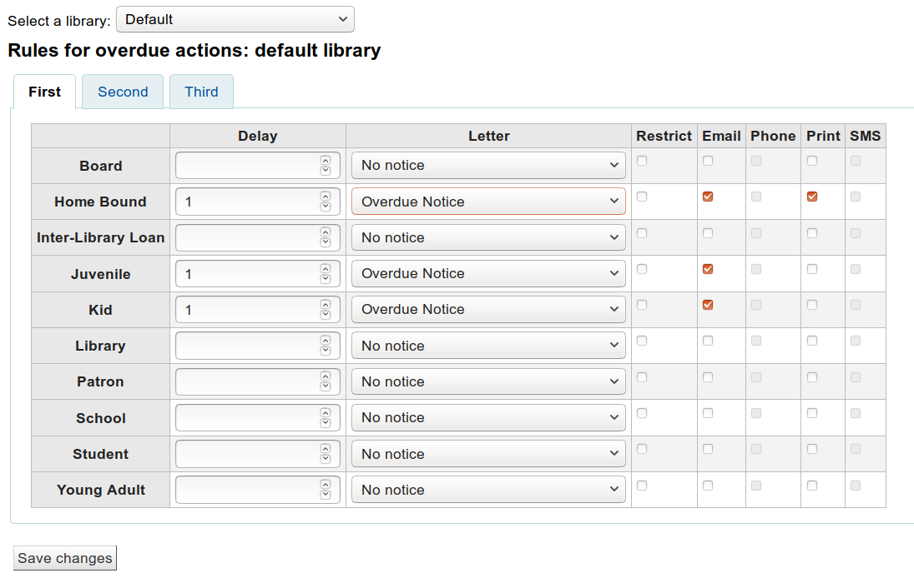
Delay is the number of days after an issue is due before an action is triggered.
Important
If you want Koha to trigger an action (send a letter or restrict member), a delay value is required.
To send additional notices, click on the tabs for ‘Second’ and ‘Third’ notice
If you would like to prevent a patron from checking items out because of their overdue items, check the ‘Restrict’ box, this will put a notice on the patron’s record at checkout informing the librarian that the patron cannot check out due to overdue items.
- If you choose to restrict a patron in this way you can also have Koha automatically remove that restriction with the AutoRemoveOverduesRestrictions preference.
Next you can choose the delivery method for the overdue notice. You can choose from Email, Phone (if you are using the iTiva Talking Tech service), Print and SMS (if you have set your SMSSendDriver).
Patron card creator
- Get there: More > Tools > Patron card creator
The patron card creator allow you to use layouts and templates which you design to print your custom patron cards on your printer. Here are some of the features of the patron card creator module:
- Customize patron card layouts with text retrieved from the Koha patron data
- Design custom card templates for printed patron cards (to match the label sheets)
- Build and manage batches of patron cards to print
- Export (as PDF) single or multiple batches to print
- Export (as PDF) single or multiple patron cards from within a batch
Layouts
- Get there: More > Tools > Patron card creator > Manage > Layouts
A layout defines the text and images that will be printed on to the card and where it will appear.
Note
Up to three lines of text, the patron’s number in barcode representation and up to two images can be printed on to the card.
Add a layout
If you have no layouts defined, you will add a new layout by clicking the ‘New’ button and choosing ‘Layout’.
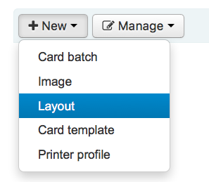
You may also choose to press ‘Manage layout’ on the left side. Here you are offered a list of available layouts you can select for editing. But at the top of the page there is still the ‘New layout’ button.
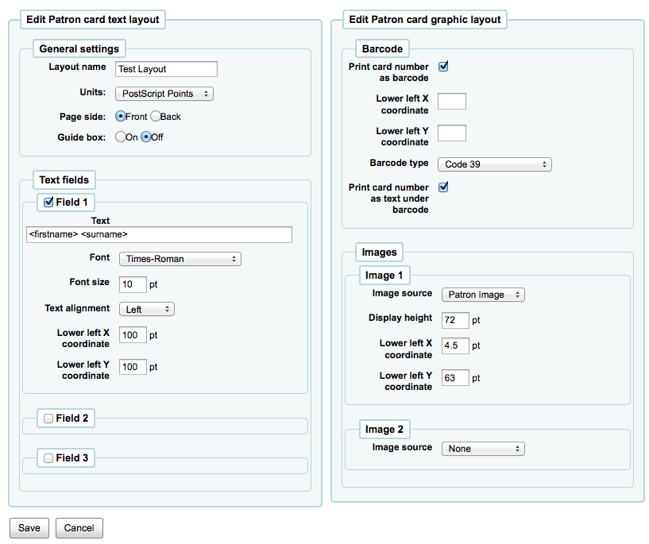
The name you assign to the layout is for your benefit, name it something that will be easy to identify at a later date
The Units pull down is used to define what measurement scale you’re going to be using for your layout.
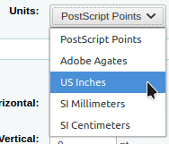
Note
A Postscript Point is 1/72”, an Adobe Agate is 1/64”, an Inch is 25.4 SI Millimeters
Next, note if this layout is for the front or the back of the patron card
Note
You will need a layout for both the front and back of your card if you have 2-sided library cards, this option doesn’t allow you to print two sided cards, just lets you track which side of the card you’re designing.
You have the option of adding up to 3 lines of text to your card. Your text can be static text of your choosing and/or fields from the patron record. If you want to print fields from the patron record you want to put the field names in brackets like so - <firstname>
Note
A full list of field names can be found in the database schema at http://schema.koha-community.org
For each line of text, you can choose your font, font size and the location of the text on the card using the lower X and Y coordinates
In order to show the barcode and the patron card number you will need to check the ‘Print card number as barcode’ option. This will turn the patron card number into a barcode. If you want the number to print in human readable format you will need to check the ‘Print card number as text under barcode’ option.
Finally you can choose up to two images to print on the card.
- One can be the patron image which you can resize to meet your needs.
- The other image can be something like a library logo or symbol that you uploaded using the ‘manage images’ module of the patron card creator Tool.
Important
It is the designers responsibility to define textlines, barcode and images such that overlap is avoided.
After saving, your layouts will appear on the ‘Manage layouts’ page.
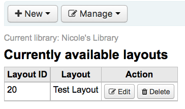
Templates
- Get there: More > Tools > Patron card creator > Manage > Card templates
A template describes the arrangement of labels on the label sheet/card stock you are using. This might be Avery 5160 for address labels, Gaylord 47-284 for spine labels or Avery 28371 for your patron cards, just to give a couple of examples. All of the information you will need for setting up a template may be on the packaging, and if not it can usually be found on the vendor’s website or can be measured from a sample sheet.
Add a template
To add a new template click on the ‘New template’ button at the top of your page which brings you to the Edit template form immediately. You may also choose to press ‘Manage templates’ on the left side. Here you are offered a list of available templates you can select for editing. But in the top of the page there is still the ‘New template’ button.
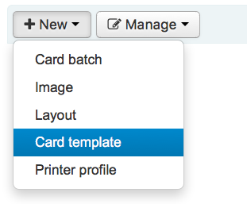
Using the form that appears after pressing either ‘Edit’ or ‘New template’ you can define the template for your sheet of labels or cards.
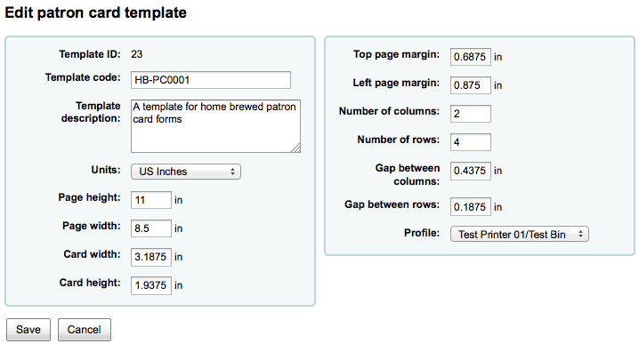
Template ID is simply a system generated unique id
Template code should be the name of this template to identify it on a list of templates
You can use the template description to add additional information about the template
The Units pull down is used to define what measurement scale you’re going to be using for the template.
Note
A Postscript Point is 1/72”, an Adobe Agate is 1/64”, an Inch is 25.4 SI Millimeters
The measurements (page height, page width, card width, card height) may be on the packaging, and if not it can usually be found on the vendor’s website or can be measured from a sample sheet.
A profile is a set of “adjustments” applied to a given template just prior to printing which compensates for anomalies unique and peculiar to a given printer (to which the profile is assigned).
Before defining a profile try printing some sample cards so that you can take measurements to define a profile to perform the right adjustments for your printer/template combination.
After finding and documenting any anomalies in the printed document, then you can create a profile and assign it to the template.
Important
Do not specify a profile unless needed, i.e. do not click to define a printer profile. It is not possible to remove a profile from a template but you can switch to another profile.
Note
If you are using different printers you may be required to define several templates that are identical only different profiles are specified.
After saving, your templates will appear on the ‘Manage templates’ page.
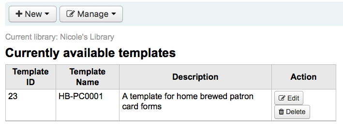
Profiles
- Get there: More > Tools > Patron card creator > Manage > Profiles
A profile is a set of “adjustments” applied to a given template just prior to printing which compensates for anomalies unique and peculiar to a given printer. This means if you set a template up and then print a sample set of data and find that the items are not all aligned the same on each card, you need to set up a profile for each printer (or even different tray selections on the same printer) to make up for the differences in printing styles, such as the shifting of text to the left, right, top or bottom.
If your cards are printing just the way you want, you will not need a profile.
Add a profile
To add a new profile, you want to click on the ‘Profiles’ button at the top of your page and choose ‘New profile’
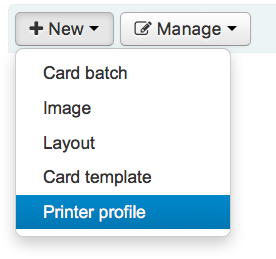
To add a new profile, you want to click on the ‘New profile’ button at the top of your page. Using the form that appears you can define the values to correct the card misalignments on your label sheet. You may also choose ‘Manage profiles’ on the left side and select one of the currently available profiles for editing.
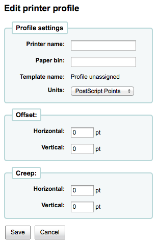
The Printer name and Paper bin do not have to match your printer exactly, they are for your reference so you can remember what printer you have set the profile for.
Note
For example: if you want to use the Printer model number in printer name you can, or you can call it ‘the printer on my desk’
Template will be filled in once you have chosen which template to apply the profile to on the template edit form
The Units pull down is used to define what measurement scale you’re going to be using for your profile.
Note
A Postscript Point is 1/72”, an Adobe Agate is 1/64”, an Inch is 25.4 SI Millimeters
Offset should be used when the entire image is off center either vertically or horizontally. Creep describes a condition where the distance between the labels changes across the page or up and down the page
- For offset and creep values, negative numbers move the printed information up and to the left on the printed sheet and positive numbers move down and to the right
- Example: the text is printed 0 .25” from the left edge of the first label, 0 .28” from the left edge of the second label and 0 .31” from the left edge of the third label. This means the horizontal creep should be set to (minus) -0.03 ” to make up for this difference.
After saving, your profiles will appear on the ‘Manage printer profiles’ page.
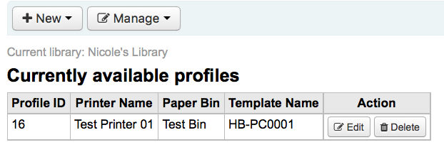
Once you have saved your new profile, you can return to the list of templates and choose to edit the template that this profile is for.
Batches
- Get there: More > Tools > Patron card creator > Manage > Card batches
A batch is a collection of patrons for whom you want to generate cards.
Add a batch
To add a new batch, you want to click on the ‘New batches’ button at the top of your page. Choosing the menu item ‘Manage batches’ on the left a list of already defined batches is displayed. In this display you can either select a batch for editing or add a new batch.
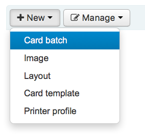
For a new batch a message pops up and directs you to select patrons to be processed in this batch.
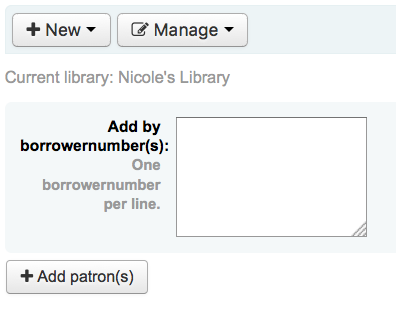
After choosing the ‘Add patron(s)’ button the Patron Search window pops up.
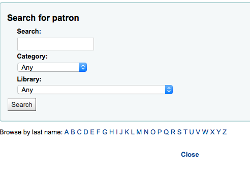
From here you can search for patrons to add to your batch by any part of their name, their category and/or library. Entering * in the search box will display all the patrons.
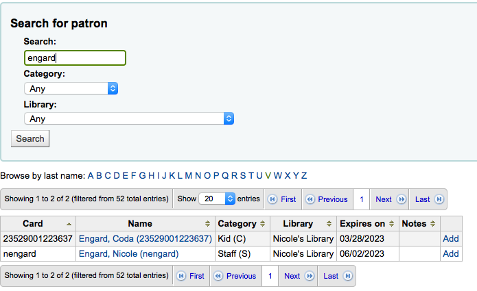
From the results you can add patrons to the batch by clicking the ‘Add’ button. After adding patrons from the results you can start over and perform another search or click ‘Close’ at the bottom of the screen to indicate that you are done. You will then be presented with your batch.
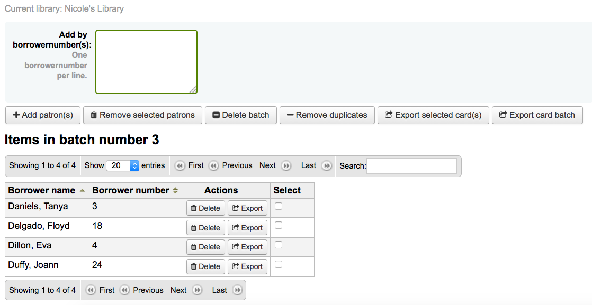
If you are satisfied with your batch you can proceed to export. If you want to correct or even delete that batch the buttons to do so can be found at the top of your screen. You can always come back here through the ‘Manage > Card batches’ button.If you would like to export all patron cards you can click ‘Export card batch’ otherwise you can choose specific patrons to print cards for by checking the box to the right of their names and then choose ‘Export selected card(s)’ at the top.
The export menu will ask you to choose a template, a layout and starting position (where on the sheet should printing begin).
Note
For the starting position if the first 6 labels have already been used on your sheet you can start printing on label in position 7 on the sheet. The labels are numbered left to right from top to bottom.
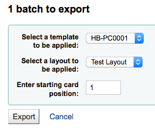
Once you click ‘Export’ you will be presented with a PDF of your labels for printing
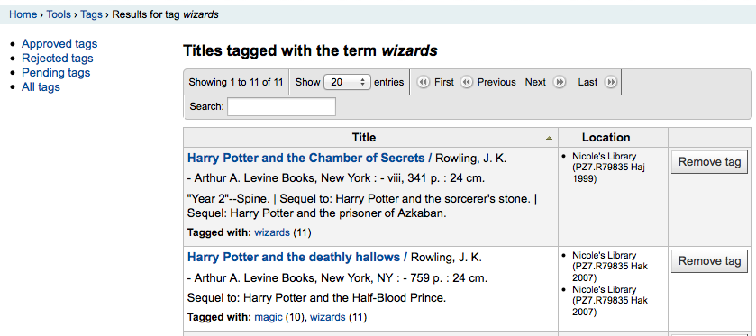
When you open the PDF you will see the cards for printing
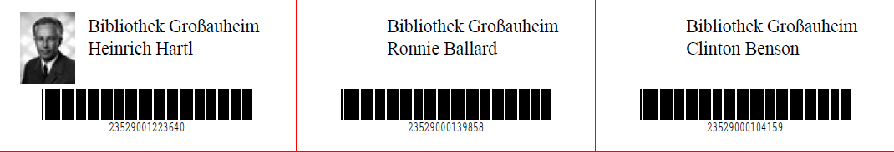
The above image shows a layout that is made up of two textlines. The first one is just plain text, the second one is composed of the <firstname> <surname> fields. A patron image is printed (if available) and the barcode of patrons number is displayed in code 39. All this is printed on a template with three columns and 8 rows using position 1-3 here. When printing this PDF please take care that your printer doesn’t rescale the PDF (e.g do not fit to paper size) otherwise the printer will not be able to print to the right place per your templates.
Manage images
- Get there: More > Tools > Patron card creator > Manage > Images
Images uploaded using this tool will appear on the menu when creating patron card layouts. You are limited in how many images you can upload (not counting patron images) by the ImageLimit system preference.
Important
Images must be under 500k in size.
Note
Pictures uploaded with this tool should be at least 300dpi which is the minimum quality for a printable image.
In the center of the screen is a simple upload form, simply browse for the file on your computer and give it a name you’ll recognize later.
Once the file is uploaded you will be presented with a confirmation message.
And the image will be listed with all of your others on the right hand side of the page.
To delete one or multiple of these images, click the checkbox to the right of each image you want to delete and click the ‘Delete’ button.
Batch patron deletion/anonymization
- Get there: More > Tools > Patrons and circulation > Batch patron deletion/anonymization
This tool allows you to bulk anonymize circulation histories (this means that you keep records of how many times items were checked out - but not the patrons who checked the items out) or bulk delete patrons (remove them from the system completely).
Important
Patrons with outstanding fines or items checked out are not saved. They are not completely removed from the system (they are only moved to the delete_borrowers table), but this tool does not provide as many checks as one may desire.
Important
Before using this tool it is recommended that you backup your database. Changes made here are permanent.
Important
The anonymization will fail quietly if AnonymousPatron preference does not contain a valid value.
To either delete or anonymize patrons
Check the ‘Verify’ box on the task you would like to complete (delete or anonymize)
Enter a date before which you want to alter the data
If deleting patrons you can also choose to find patrons who
- have not borrowed since a specific date
- have accounts that will expire before a specific date
- are in a specific patron category
- are in a patron list
Click ‘Next’
A confirmation will appear asking if you’re sure this is what you want to happen
Clicking ‘Finish’ will delete or anonymize your data
Batch patron modification
- Get there: More > Tools > Patrons and circulation > Batch patron modification
With this tool you can make edits to a batch of patron records. Simply load in a file of cardnumbers (one per line), choose from a list of patrons or scan patron card numbers in to the box provided.
Once you have the file loaded or the barcodes scanned click ‘Continue.’ You will be presented with a list of the patrons and the changes you can make.
To the left of each text box there is a checkbox. Clicking that checkbox will clear our the field values.
Important
If the field is mandatory you will not be able to clear the value in it.
If you have multiple patron attributes you can change them all by using the ‘+ New’ link to the right of the text box. This will allow you to add another attribute value.
Once you have made the changes you want, you can click ‘Save’ and Koha will present you with the changed patron records.
Batch extend due dates
- Get there: More > Tools > Patrons and circulation > Batch extend due dates
This tool allows you to update due dates in bulk, this can be useful if a library needs to close unexpectedly and cannot accept returns.
- You can filter the selection of checkouts based on patron category, library or a combination of both. You can select multiple options in the dropdown lists if needed.
- Next, specify a date range for the current due date of the materials on loan. For example, you may want to extend the due dates for recent checkouts but exclude long overdue loans.
- Choose to extend the due dates either to a new hard due date or by a number of days. Using the number of days option can prevent large numbers of loans being due on the same date.
- You can choose whether to preview the results of your selections.
- If you preview the results you will see a table which shows you the current due date and the new due date so that you can check your selections. You can untick checkouts if they are incorrect or go back and change your selection.
- Click on the Modify selected checkouts button to see a confirmation screen showing the checkouts that have been modified.
注解
Access to this tool requires the Tools permission batch_extend_due_dates.
Tag moderation
- Get there: More > Tools > Patrons and circulation > Tags
Depending on your tagging system preferences, librarians may need to approve tags before they are published on the OPAC. This is done via the tag moderation tool. If there are tags awaiting moderation they will be listed on the main staff dashboard under the module labels:
To moderate the tags visit the Tags tool. When first visiting the tool, you will be presented with a list of tags that are pending approval or rejection by a librarian
To see all of the titles this tag was added to simply click on the term
- From this list of titles you can remove a tag without outright rejecting it from being used in the future by clicking the ‘Remove tag’ button to the right of the title.
To approve a tag, you can either click the ‘Approve’ button in line with the term, or check all terms you want to approve and click ‘Approve’ below the table.
To reject a tag, you can either click the ‘Reject’ button in line with the term, or check all terms you want to reject and click ‘Reject’ below the table.
Once a tag has been approved or rejected it will be moved to the appropriate list of tags. A summary of all tags will appear on the right of the screen.
Even though a tag is approved or rejected, it can still be moved to another list. When viewing approved tags each tag has the option to reject:
To check terms against the approved and rejected lists (and possibly against the dictionary you have assigned for tag moderation) simply enter the term into the search box on the bottom right of the screen to see the status of the term
Finally you can find tags by using the filters on the left.
Upload patron images
- Get there: More > Tools > Patrons and circulation > Upload patron images
Patron images can be uploaded in bulk if you are allowing patron images to be attached to patron records. These images can also be used when creating patron cards.
Create a txt file and title it “DATALINK.TXT” or “IDLINK.TXT”
On each line in the text file enter the patron’s card number followed by comma (or tab) and then the image file name
- Make sure that your TXT file is a plain text document, not RTF.
Zip up the text file and the image files
Go to the Upload patron images tool
For a single image, simply point to the image file and enter the patron card number
For multiple images, choose to upload a zip file
After uploading you will be presented with a confirmation
Important
There is a limit of 100K on the size of the picture uploaded and it is recommended that the image be 200x300 pixels, but smaller images will work as well.
Catalog
Batch item deletion
- Get there: More > Tools > Catalog > Batch item deletion
This tool will allow you to delete a batch of item records from Koha.
From the tool you can choose to upload a file of barcodes or item ids, or you can scan items one by one into the box below the upload tool.
Once you have your file uploaded or the barcodes scanned you can click ‘Continue.’
You will be presented with a confirmation screen. From here you can uncheck the items you don’t want to delete and decide if Koha should delete the bib record if the last item is being deleted before clicking ‘Delete selected items.’ If you’d like you can delete the bibliographic record if you’re deleting the last item by clicking the checkbox next to ‘Delete records if no items remain’.
If your file (or list of scanned barcodes) has more than 1000 barcodes, Koha will be unable to present you with a list of the items. You will still be able to delete them, but not able to choose which items specifically to delete or delete the biblio records.
If the items are checked out you will be presented with an error after clicking ‘Delete selected items’ and the items will not be deleted.
If the items can be deleted they will be and you will be presented with a confirmation of your deletion.
Batch item modification
- Get there: More > Tools > Catalog > Batch item modification
This tool will allow you to modify a batch of item records in Koha.
From the tool you can choose to upload a file of barcodes or item ids, or you can scan items one by one into the box below the upload tool. You can also decide the items edited should be populated with the default values you have defined in your default framework.
Once you have your file uploaded or the barcodes listed you can click ‘Continue.’
You will be presented with a summary of the items you want to modify. From here you can uncheck the items you don’t want to modify before making changes in the form below. You can also hide columns you don’t need to see to prevent having to scroll from left to right to see the entire item form. The holds column displays a count of the current holds for the item.
Note
To uncheck all items that are currently checked out you can click the ‘Clear on loan’ link at the top of the form.
Using the edit form you can choose which fields to make edits to. By checking the checkbox to the right of each field you can clear the values in that field for the records you are modifying.
You can also click the ‘RegEx’ link to change the text field to a regular expression substitution. This is used to change only a part of a text string.
Once you have made you changes you will be presented with the resulting items.
Note
You can also edit items on one bibliographic record in a batch by going to the bibliographic record and clicking Edit > Edit items in batch
Batch record deletion
This tool will take a batch of record numbers for either bibliographic records or authority records and allow you to delete all those records and any items attached to them in a batch.
First you need to tell the tool if you’re deleting bibliographic or authority records.
Next, you can:
load a file with biblionumbers or authids;
use a list;
or enter the list of numbers in the box provided.
Once you submit the form you will be presented with a summary of the records you are trying to delete.
If a record you want to delete can’t be deleted it will be highlighted.
Check the records you want to delete and click the ‘Delete selected records’ button to finish the process.
Batch record modification
- Get there: More > Tools > Catalog > Batch record modification
This tool will allow you to edit batches of bibliographic and authority records using MARC modification templates. Before visiting this tool you will want to set up at least one MARC modification template.
When you visit the tool it will ask you:
Choose whether you’re editing bibliographic or authority records
Enter the biblionumbers or authids
You can upload a file of these numbers;
You can use a list;
Or enter the numbers (one per line) in the box provided.
Finally choose the MARC modification template you’d like to use to edit these records.
Once you’ve entered your criteria click ‘Continue’
You will be presented with a list of records that will be edited. Next to each one is a checkbox so you can uncheck any items you would rather not edit at this time.
Clicking ‘Preview MARC’ will allow you to see what edits will be made when you finalize the edit.
Once you’re sure everything is the way you want you can click the ‘Modify selected records’ button and your records will be modified.
Automatic item modifications by age
- Get there: More > Tools > Catalog > Automatic item modifications by age
This tool allows librarians to update item specific fields when an item reaches a certain age.
Note
Staff need the items_batchmod permission to access this tool
Important
The settings in this tool will be acted upon by the corresponding cron job
If you haven’t created any rules you will see the option to ‘Add rules’ on the Tool page. Click this button to create rules.
If you have rules already there will be a button that reads ‘Edit rules’. To create a new rule click the ‘Edit rules’ button at the top of the page
You will be brought to a page where you can edit exisitng rules or create a new rule
In the form that appears you can set :
- the age in days at which the item will update (Age)
- what criteria is needed to trigger the update (Conditions)
- what changes are made when the script runs (Substitutions)
Once you’re done you can click the ‘Add this rule’ link and then add additional rules or you can click the ‘Submit these rules’ button to save your changes.
Export data
- Get there: More > Tools > Catalog > Export data
Koha comes with a tool that will allow you to export your bibliographic, holdings and/or authority data in bulk. This can be used to send your records to fellow libraries, organizations or services; or simply for backup purposes.
Export bibliographic records
At the top of the screen you need to pick what data you’re exporting. If you’re exporting bibliographic records with or without the holdings information you want to click the ‘Export bibliographic records’ tab.
Fill in the form in order to limit your export to a specific range (all fields are optional)
Choose to limit your export by any one or more of the following options
Limit to a bib number range
Limit to a specific item type
Important
This limit will use the type you have defined in the item-level_itypes preference. If you have the item-level_itypes preference set to ‘specific item’ and you have no items attached to a bib record it will not be exported. To get all bib records of a specific type you will need your item-level_itypes preference set to ‘biblio record’.
Limit to a specific library or group of libraries
Important
This is a filter: if you leave this set to the default (all libraries selected) or select one or more libraries, bib records with no items attached will not be exported. To get bib records with no items you will need to ‘clear all’ (i.e. de-select all libraries).
Limit to a call number range
Limit to an acquisition date range
If you’d like you can load a file of biblionumbers for the records you would like to export. File type needs to be .csv or .txt
Next choose what to skip when exporting
- By default items will be exported, if you would like to only export bibliographic data, check the ‘Don’t export items’ box
- To limit your export only to items from the library you’re logged in as (if you leave the ‘Library’ field set to ‘All’) or to the library you selected above check the ‘Remove non-local items’ box
- You can also choose what fields you don’t want to export. This can be handy if you’re sharing your data, you can remove all local fields before sending your data to another library
Finally choose the file type and file name
- Choose to export your data in marc or marcxml format
- Choose the name you want your file to save as
Click ‘Export bibliographic records’
Export authority records
At the top of the screen you need to pick what data you’re exporting. If you’re exporting authority records you want to click the ‘Export authority records’ tab.
Fill in the form in order to limit your export to a specific range or type of authority record (all fields are optional)
Or you can choose a file of authids to export
File type needs to be .csv or .txt
Next choose fields that you would like to exclude from the export separated by a space (no commas)
- If you’d like to exclude all subfields of the 200 for example just enter 200
- If you’d like to exclude a specific subfield enter it beside the field value 100a will exclude just the subfield ‘a’ of the 100
Finally choose the file type and file name
- Choose to export your data in marc or marcxml format
- Choose the name you want your file to save as
Click ‘Export authority records’
Inventory
- Get there: More > Tools > Catalog > Inventory
Koha’s inventory tool can be used in one of three ways:
- By creating a shelf list that you can then mark items off on;
- By uploading barcodes gathered by a portable scanner;
- By comparing barcodes gathered by a portable scanner or scanned directly to a generated shelf list.
Creating a shelf list
If you do not have the ability to use your barcode scanner on the floor of the library, the option available to you is to generate a shelf list based on criteria you enter. You can then print it to use while walking around the library checking your collection or use it directly in Koha on a portable device.
First, choose the criteria for the items you want to print out on a list. All parameters are optional, but if none are selected, the resulting list might be quite large.
- Library: choose the branch you want to check, as well as if that branch is the home library or the current holding library of the items.
- Shelving location (items.location) is: you can filter by location.
- Item callnumber between … and …: you can also limit the list to a specific range of callnumbers.
- If filtering by callnumber, make sure to choose the correct classification scheme
You can filter even more with item statuses (not for loan status, lost status, withdrawn status or damaged status). Check the boxes next to the statuses you want to include. For example, if you are using the list to shelf read, check only the ‘for loan’ status as the other items probably won’t be on the shelves.
- Last inventory date: enter a date here to skip items that have been marked as seen recently.
- Skip items on loan: check this box to filter out loaned items from the list.
- Skip items on hold awaiting pickup: check this box to filter out items that are awaiting pickup by patrons
- Item types: check the boxes next to the item types you want to include in your shelf list
- Export to CSV file: check this box to generate a CSV file for altering in an application on your desktop. If this box is unchecked, the list will be presented on the screen.
Click on ‘Submit’ to generate your shelf list.
Once you have found the items on your shelves, return to this list and check the boxes next to the items you found. Next, click on one of the three buttons to continue:
- Mark seen and quit: updates the ‘last seen’ date of the checked items to today and returns to the previous screen.
- Mark seen and continue: updates the ‘last seen’ date of the checked items to today and shows the next page of the list.
- Continue without marking: doesn’t update any of the items on this page and shows the next page of the list.
Uploading barcodes with a scanner
If you have a portable scanner (or a laptop and USB scanner) you can walk through the library with the scanner in hand and scan barcodes as you come across them (on a laptop, scan the barcodes into a text file or directly into the on screen text box). Once finished you can then upload the text file generated by the scanner to Koha.
- Set inventory date to: choose the date you want to mark all items as last seen.
- Compare barcodes list to results: uncheck for this method.
- Do not check in item scanned during inventory: unless this is checked, Koha will check in items scanned, as it is assumed that they are on the shelf and so not loaned out. If you do not want to check in scanned items, check this option.
- Check barcodes list for items shelved out of order: if this option is checked, Koha will compare the call numbers and make sure they are in the correct order.
Click ‘Submit’. This will update all the items’ ‘last seen’ date to the chosen date.
Once you have the updated the last seen date for all items scanned during the inventory it is possible to use reports to identify items that were not scanned and can therefore be assumed missing (you can use the batch item modification tool to change the LOST status of these items). There are sample reports you can use on the Koha SQL Reports Library.
Comparing scanned barcodes to a shelf list
Alternatively, you can combine the two methods to automatically compare a list of scanned barcodes with a generated list.
First, upload you barcode file or scan the barcodes in the box.
- Set inventory date to: choose the date you want to appear in the items’ ‘last seen’ field.
- Compare barcodes list to results: should automatically be checked.
- Do not check in items scanned during inventory: make sure to check this option if you do not want the scanned items to be automatically checked-in if they are checked-out.
Choose the filters (library, shelving location, callnumbers, statuses or item types) to generate a list with which to compare your barcodes. Click on ‘Submit’.
注解
Depending on the number of barcodes you are comparing, this may take a few minutes. It is not recommended to compare lists of more than 1000 barcodes as this may cause a session timeout.
Once Koha has finished comparing the barcodes file to the generated list, it will return the number of items updated and a list of problematic items.
注解
Unlike when creating a shelf list, the list that will be presented here will only contain the items that Koha has determined are problematic.
- Missing (not scanned): the item is in the generated list but not in the barcodes file.
- Found in wrong place: the item is in the barcodes list, but not in the generated list.
- Still checked out: the item is checked out, but is in the generated list. It was not automatically checked in.
- No barcode: the barcode doesn’t exist.
- Unknown not-for-loan status: the item has ‘not for loan’ status that is not in the NOT_LOAN authorized values list
- Item may be shelved out of order: the callnumber is out of order
Label creator
- Get there: More > Tools > Catalog > Label creator
The label creator tool allows you to use layouts and templates which you design to print a nearly unlimited variety of labels including barcodes. Here are some of the features of the label creator tool:
- Customize label layouts
- Design custom label templates for printed labels
- Build and manage batches of labels
- Export single or multiple batches
- Export single or multiple labels from within a batch
- Export label data in one of three formats:
- PDF - Readable by any standard PDF reader, making labels printable directly on a printer
- CSV - Export label data after your chosen layout is applied allowing labels to be imported in to a variety of applications
- XML - Included as an alternate export format
Templates
- Get there: More > Tools > Label creator > Manage > Label templates
A template is based on the label/card stock you are using. This might be Avery 5160 for address labels, Gaylord 47-284 for spine labels or Avery 28371 for your patron cards, just to give a couple of examples. These labels will include all of the information you will need for setting up in Koha. This information may be on the packaging, and if not it can usually be found on the vendor’s website.
Add a template
To add a new template, you want to click on the ‘New’ button at the top of the label creator page and choosing ‘Label template’.
Using the form that appears you can define the template for your sheet of labels or cards.
‘Template ID’ will be automatically generated after saving your template, this is simply a system generated unique id
‘Template code’ should be something you can use to identify your template on a list of templates
You can use the ‘Template description’ to add additional information about the template
The ‘Units’ pull down is used to define what measurement scale you’re going to be using for the template. This should probably match the unit of measurement used on the template description provided by the product vendor.
The measurements, number of columns and number of rows can be found on the vendor product packaging or website.
Page height: height of the page
Page width: width of the page
Label width: width of the label
Label height: height of the label
Top page margin: height between the top of the page and the top of the first row of labels
Left page margin: width between the left side of the page and the left side of the first column of labels
Top text margin: height between the top of the label and the top of the first line of text
Left text margin: width between the left side of the label and the start of the text
Important
If you do not supply a left text margin in the template, a 3/16” (13.5 point) left text margin will apply by default.
Number of columns: number of columns of labels in a page, or number of labels per row
Number of rows: number of rows of labels in a page, or number of labels per column
Gap between columns: width between two columns of labels
Gap between rows: height between two rows of labels
A profile is a set of “adjustments” applied to a given template just prior to printing which compensates for anomalies unique and peculiar to a given printer (to which the profile is assigned).
- Before picking a profile try printing some sample labels so that you can easily define a profile that is right for your printer/template combination.
- After finding any anomalies in the printed document, create a profile and assign it to the template.
After saving, your templates will appear on the ‘Manage’ area under ‘Label templates’.
Profiles
- Get there: More > Tools > Label creator > Manage > Printer profiles
A profile is a set of “adjustments” applied to a given template just prior to printing which compensates for anomalies unique and peculiar to a given printer (to which the profile is assigned). This means if you set a template up and then print a sample set of data and find that the items are not all aligned the same on each label, you need to set up a profile for each printer to make up for the differences in printing styles, such as the shifting of text to the left, right, top or bottom.
If your labels are printing just the way you want, you will not need a profile.
Add a profile
To add a new profile, you want to click on the ‘New’ button at the top of the label creator tool and choose ‘Printer profile’.
Using the form that appears you can create a profile to fix any problems with your template.
The ‘Printer name’ and ‘Paper bin’ do not have to match your printer exactly, they are for your reference so you can remember what printer you have set the profile for. So if you want to use the Printer model number in printer name or you can call it ‘the printer on my desk’
‘Template name’ will be filled in once you have chosen which template to apply the profile to on the template edit form
The ‘Units’ pull down is used to define what measurement scale you’re going to be using for your profile.
Offset describes what happens when the entire image is off center either vertically or horizontally and creep describes a condition where the distance between the labels changes across the page or up and down the page
- For these values, negative numbers move the error up and to the left and positive numbers move the error down and to the right
- Example: the text is .25” from the left edge of the first label, .28” from the left edge of the second label and .31” from the left edge of the third label. This means the horizontal creep should be set to .03” to make up for this difference.
After saving, your profiles will appear on the ‘Manage’ area under ‘Printer profiles’.
Once you have saved your new profile, you can return to the list of templates and choose to edit the template that this profile is for.
Layouts
- Get there: More > Tools > Label creator > Manage > Layouts
A layout is used to define the fields you want to appear on your labels.
Add a layout
To add a new layout, you want to click on the ‘New’ button at the top of the Label creator tool and choose ‘Layout’.
Using the form that appears you can decide what appears on your labels.
The name of your layout can be anything you’d like to help you identify it later.
If this is a barcode label you’ll want to choose the encoding (Code 39 is the most common)
The layout type can be any combination of bibliographic information and/or barcode. For example a spine label would just be Biblio whereas a label for your circulation staff to use to checkout the book would probably be Biblio/Barcode.
Biblio: only bibliographic information will appear on the label (e.g. spine labels)
Barcode/Biblio: the barcode will appear at the top of the label and the bibliographic information undeneath
Biblio/Barcode: the bibliographic information will appear at the top of the label and the barcode underneath
Alternating: the bibliographic information will appear on one label, and the barcode on the next label, alternating for each item
Barcode: only the barcode will appear on the label
The Bibliographic data to print includes any of the data fields that may be mapped to your MARC frameworks. You can choose from the preset list of fields or you can click on ‘List fields’ and enter your own data. In ‘List fields’, you can specify MARC subfields as a 4-character tag-subfield string, for example 254a for the title field. You can also enclose a whitespace-separated list of fields to concatenate on one line in double quotes, for example “099a 099b” or “itemcallnumber barcode”. The fields available are from the database tables list below. Finally you could add in static text strings in single-quote, for example ‘Some static text here.’
You can use the schema viewer (http://schema.koha-community.org) with the following tables to find field names to use:
Currently all fields in the following tables are used: items, biblioitems, biblio, branches
Choose if the label maker should print out the guidelines around each label
Choose if you’d like Koha to try to split your call numbers (usually used on spine labels)
Note
Call number spltting rules are managed under Administration > Classification sources.
Choose your text settings such as alignment, font type and size. You can also italicize the title by checking the ‘Oblique title’ box.
After saving, your layouts will appear on the ‘Manage layouts’ page.
Batches
- Get there: More > Tools > Label creator > Manage > Label batches
Batches are made up of the items for which you would like to print labels. Once in this tool you can search for the item records you would like to print out labels for.
Add a batch
Batches can be created in one of two ways. The first is to click the ‘Create label batch’ link on the ‘Staged MARC management’ page:
The other is to choose to create a new batch from the label creator tool
You will be brought to an empty batch with a box to scan barcodes or itemnumbers in to and an ‘Add item(s)’ button at the bottom of the page.
You can either scan barcodes in to the box provided and click the ‘Add item(s)’ button or you can click the ‘Add item(s)’ button with the barcodes box empty. Clicking ‘Add item(s)’ with nothing in the barcodes box will open a search window for you to find the items you want to add to the batch.
From the search results, click the check box next to the items you want to add to the batch and click the ‘Add checked’ button. You can also add items one by one by clicking the ‘Add’ link to the left of each item.
Once you have added all of the items click the ‘Done’ button. Click again on the ‘Add item(s)’ button to transfer the items from the barcode box to the batch. The resulting page will list the items you have selected.
To print your labels, click the ‘Export full batch’ button. To print only some of the labels, click the ‘Export selected item(s)’ button. Either way you will be presented with a confirmation screen where you can choose your template and layout. If you’re using a sheet of labels that is not complete, you can enter the starting label (labels are counted horizontally).
You will then be presented with three download options: PDF, Excel, and CSV.
After saving your file, simply print on the blank labels you have in your library.
Barcode range
- Get there: More > Tools > Label creator > New > Barcode range
If you want to print your barcode labels in advance, before even cataloging the items, you can choose to add a batch of a range of barcodes.
Click ‘New’ and choose ‘Barcode range’ from the label creator tool.
Enter the starting and ending barcodes.
Note
The barcode range tool does not accept leading zeroes. If you enter 0001234 the barcode that will be printed will be 1234.
Click ‘Print range’.
You will be presented with the confirmation screen where you can choose your template and layout and enter the starting label if using an incomplete sheet of labels.
The only download option for barcode ranges is PDF.
Save the file and print it on a blank sheet of labels.
Quick spine label creator
Get there: More > Tools > Catalog > Quick spine label creator
Note
This tool does not use the label layouts or templates, it simply prints a spine label in the first spot on the label sheet.
- Define the fields you want to print on the spine label in the SpineLabelFormat system preference
- Format your label printing by editing spinelabel.css found in koha-tmpl/intranet-tmpl/prog/en/css/
To use this tool you simply need the barcode for the book you’d like to print the spine label for.
Rotating collections
- Get there: More > Tools > Catalog > Rotating collections
Rotating collections is a tool for managing collections of materials that frequently get shifted from library to library. It adds the ability to store not only an item’s home library and current location but also information about where it is supposed to be transferred to next to ensure that all items in the collection are sent to the correct library. When an item in a rotating collection is checked in, library staff is notified that the item is part of a rotating collection and which branch it should be sent to if it is not at the correct one.
Important
The AutomaticItemReturn system preference must be set to “Don’t automatically transfer items to their home library when they are returned” for rotating collections to function properly.
- To create a new rotating collection, click the “New collection” button, fill in the title and description, and click “Submit”. Once submitted you’ll see “Collection name added successfully”; click “Return to rotating collections home” to return to the main Rotating collections management page (or click Rotating collections in the sidebar).
- To add items to a collection, click “Actions” and choose “Add or remove items” next to the collection’s name in the list of collections. Under “Add or remove items” scan or type in the barcode of the item you wish to add to the collection, and hit enter or click ‘Submit’ if necessary.
- To remove an item from a collection, either click ‘Remove’ next to the item’s barcode in the list of items within the collection or check the “Remove item from collection” box next to the Barcode text box under “Add or remove items”, and scan or type in the barcode, clicking “Submit” or hitting Enter if necessary. Note: The “Remove item from collection” checkbox will remain checked as long as you are on the “Add or remove items” page, unless you uncheck it, to facilitate quickly removing a number of items at a time by scanning their barcodes.
Transfer a rotating collection
Transferring a collection will:
- Change the current location of the items in that collection to the library it is to be transferred to
- Initiate a transfer from its original current location/holding library to the current location/holding library it is to be rotated to. When a library receives a collection they will need to check in the items to complete the transfer.
You can transfer a collection in one of two ways:
From the main Rotating collections page, click on “Actions” and choose “Transfer” next to the title of the collection you wish to transfer; choose the library you wish to transfer the collection to and click “Transfer collection”.
Or, from the “add or remove items” page for a collection, you can click the “Transfer” button, choose the library you wish to transfer the collection to and click “Transfer Collection”.
Important
In order to complete the transfer process, the library receiving the rotating collection should check in all items from the collection as they receive them. This will clear the transfer so that the items are no longer shown as being “in transit”.
If an item in a rotating collection is checked in at a library other than the one it is supposed to be transferred to, a notification will appear notifying library staff that the item is part of a rotating collection, also letting them know where the item needs to be sent.
Stock rotation
Stock rotation helps to spread resources more fairly amongst library branches and allows patrons to see a wider range of titles.
Items are popular whilst they are new at a particular branch. However, their use often tails off over time. This tool empowers librarians to automate the movement of items on to another branch before usage declines and thereby extends the items useful life.
Library staff create rotation plans and then assign them to items. A cronjob is then used to cycle these items round the specified libraries on the rotation plan, moving them to the next stage after the prescribed period of time has passed at the current stage.
Email notices may be used to provide the library branches with a list of items to be put in-transit to the next branch and if an item is found to be on loan at the time that it should be transfered then an alert will be displayed when it is next returned.
From the stock rotation tool page you can add new rotation plans and see a summary of your currently configured rotation plans. You can then edit plan details, activate and deactivate plans and manage stages and items on a given rotation plan.
Note
- You can customize the columns of this table in the ‘Table settings’ section of the Administration module (table id: stock_rotation).
This tool utilises a cron job that must be configured to run on a daily basis.
Editing rota details
Name: A clear name or code to identify the rota
Cyclical: Denotes whether items remain (No) at the last library on the rotation plan upon reaching the end of the rota or whether they continue (Yes) to rotate, returning back to the first library on the rotation plan once they have completed their alloted time at the last library, indefinitely until manually removed from the rota.
Active: Denotes whether a rota is active and as such whether items on it are rotating. It also governs whether items may be added to and removed from the rota. A rota may be switched between active and inactive at any time allowing for rota maintanence.
Description: One may optionally add an expanded description of the rota for display in summary views.
Managing rota stages
Stages may be edited, added, removed and re-ordered at any time from this page.
Library: The library the item will be at during this stage
Duration: The amount of time the item should stage at this stage
Managing rota items - Tool view
Note
- You can customize the columns of this table in the ‘Table settings’ section of the Administration module (table id: stock_rotation_manage_items).
Items can be added to a rota individually (by barcode) or in bulk (via the upload of a line delimited barcode file) on this page.
You will also be presented with a summary of all items on the rota with their current location and you have the options to immediately progress items, mark items as ‘in demand’ and remove an item from rotation.
In demand: If an item is marked as ‘in demand’ then the duration the item will stay at it’s current stage will be doubled compared to what is set in the rota. This is often used for items that are found to be unexpectedly popular at a particular library.
Managing rota items - Catalog view
Rotating items may also be managed from the catalog view: When stock rotation is enabled a new menu tab ‘Rota’ will appear on a catalog records detail view.
All attached items will appear in the summary view with their current status in relation to rotas and the option to mark items as ‘in demand’ or immediately progress them. You can also remove items from rotation and add items to rotas here too.
Managing rota items - EDI
Items can be automatically added to rotas at aquisition time by using the LRP (Library Rotation Plan) field in EDI.
Managing rotation notices
Stock rotation can send email notices to branch libraries to aid in selecting the items due for rotation. Branch ‘Reply-to’ addresses will be used in preference to ‘Email’ addresses for the notice recipients.
The contents of the notices can be customised in the normal manor through the notices tool and the relevant notice has the code SR_SLIP.
Permissions
The stock rotation tool uses two distinct permissions:
- manage_rotas:
- this governs a users ability to create, update and delete a rota.
- manate_rota_items:
- this governs a users ability to add, remove and progress items on a rota.
MARC modification templates
The MARC modification templates system gives Koha users the power to make alterations to MARC records automatically while staging MARC records for import or making batch record modifications.
This tool is useful for altering MARC records from various vendors/sources work with your MARC framework. The system essentially allows one to create a basic script using actions to Copy, Move, Add, Update and Delete fields.

Click on ‘New template’ (a template can be made up of one or more actions), enter a name and click ‘Submit’. Optionally, you can decide to copy an existing template by choosing the template to copy in the ‘Duplicate a template’ drop-down menu.
Next you can add actions to the template. Click on ‘New action’. A ‘Add a new action’ box will appear that you can use to specify what exactly you want to do. For example if you’re loading in a batch of files from your EBook vendor you might want to add the biblio item type of EBOOK to the 942$c.
Choose ‘Add new’
Enter the field 942 and subfield c
Enter the value of ‘EBOOK’ (or whatever your ebook item type code is)
Provide a description so you can identify this action later
Click ‘Add action’
Note
If you wish to update the values in an existing field choose the option ‘Update existing or add new’. This will update existing values where found and add a new field if one doesn’t exist.
Each action can also have an optional condition to check the value or existence of another field. For example you might want to add the call number to the item record if it’s not already there.
- Choose ‘Copy’
- Decide if you want to copy the first occurrence or all occurrence of the field
- Enter the field 090 (or other bibliographic call number field) and subfield a to copy
- Enter the 952 field and o subfield to copy to
- Choose ‘if’
- Enter the 952 field and o subfield
- Choose “doesn’t exist”
- Provide a description so you can identify this action later
- Click ‘Add action’
The Copy & Move actions also support regular expressions, which can be used to automatically modify field values during the copy/move. An example would be to strip out the ‘$’ character in field 020$c.
Choose ‘Copy and replace’
Decide if you want to copy the first occurrence or all occurrences of the field
Enter the field 020 and subfield c to copy
Enter the 020 field and c subfield to copy to
Check the ‘RegEx’ box and enter your regular expression (in this case s/\$// )
Choose ‘if’
Enter the 020 field and c subfield
Choose “matches”
Check the ‘RegEx’ box and enter your regular expression (in this case m/^\$/ )
Provide a description so you can identify this action later
Click ‘Add action’
Note
The value for an update can include variables that change each time the template is used. Currently, the system supports two variables, __BRANCHCODE__ which is replaced with the branchcode of the library currently using the template, and __CURRENTDATE__ which is replaced with the current date in ISO format ( YYYY-MM-DD ).
You could also use regular expressions to add your library’s proxy URL in front of links in your MARC record.
- Choose ‘Copy and replace’
- Decide if you want to copy the first occurrence or all occurrences of the field
- Enter the field 856 and subfield u to copy
- Enter the 856 field and u subfield to copy to
- Check the ‘RegEx’ box and enter your regular expression (in this case s/^/PROXY_URL/ )
- Provide a description so you can identify this action later
- Click ‘Add action’
When choosing between ‘Copy’ and ‘Copy and replace’ keep the following example in mind:
245 _aThe art of computer programming _cDonald E. Knuth.
300 _aA_exists _bB_exists
If we apply action (a) Copy the whole field 245 to 300, we get:
245 _aThe art of computer programming _cDonald E. Knuth.
300 _aA_exists _bB_exists
300 _aThe art of computer programming _cDonald E. Knuth.
If we apply action (b) Copy the subfield 245$a to 300$a, we get:
245 _aThe art of computer programming _cDonald E. Knuth.
300 _aThe art of computer programming _bB_exists
Once your actions are saved you can view them at the top of the screen. Actions can be moved around using the arrows to the left of them.
Actions will be done in the order they appear. Depending on your actions the order may be very important. For example you don’t want to delete a field before you copy it to another field. You can use the blue arrows to move actions up or down the list.
- The up arrow will move the action up one position
- The up arrow with a line at the top will move the action to the first position
- The down arrow with a line at the bottom will move the action to the last position
- The down arrow will move the action down one position
Once your template is saved you will be able to pick it when using the Stage MARC records for import tool or when using the batch record modification tool.
Stage MARC records for import
- Get there: More > Tools > Catalog > Stage MARC records for import
This tool can be used to import both bibliographic and authority records that are saved in MARC format. Importing records into Koha includes two steps. The first is to stage records for import.
First find the MARC file on your computer
Next you will be presented with options for record matching and item imports
‘Comments about this file’: enter comments to identify your upload when going to the ‘Manage staged MARC records’ tool
‘Record type’: tell Koha which type of file this is, bibliographic or authority
‘Character encoding’: choose the character encoding of your file
‘Format’: choose the MARC format of your file
‘Modify record using the following template’: choose if you would like to use a MARC modification template to alter the data you’re about to import
Choose whether or not you want to look for matching records
‘Record matching rule’: choose which rules to use to check your catalog if these records already exsit.
Note
You can set up record matching rules in the administration area
- When using the ISBN matching rule Koha will find only exact matches. If you find that the ISBN match is not working to your satisfaction you can change the AggressiveMatchOnISBN preference to ‘Do’ and then run your import again.
‘Action if matching record found’: choose what to do with matching records if they are found
- Replace existing record with incoming record: choose this if you are importing more complete records than the ones you currently have, or if you made some changes using an external tool (MarcEdit for example)
- Add incoming record: this will keep the existing record and add the incoming record, so you may end up with duplicates
- Ignore incoming record (its items may still be processed): choose this if you do not want to replace existing records
‘Action if no match is found’: choose what to do with records that are unique
- Add incoming record: choose this if you wish to import records that are not already in your catalog (for example, for new titles)
- Ignore incoming record: choose this if you don’t want to import records that are not alreay in your catalogue (for example, if you’re only replacing existing records and don’t want to add anything)
‘Check for embedded item record data?’: choose whether or not to import the item data (field 952) found in the MARC records (if the file you’re loading is a bibliographic file)
Always add items: always add items regardless of matching status
Add items only if matching bib was found: this will only add items to existing records in your catalog
Add items only if no matching bib was found: this will only add items to the new records you’re importing, not the ones that already exist
Replace items if a matching bib was found: the match will look at the itemnumbers and barcodes to match on for items and will only replace existing items.
Note
Itemnumbers take precendence over barcodes
Ignore items: this will not add any items
Click ‘Stage for import’
You will be presented with a confirmation of your MARC import
To complete the process continue to the Manage staged MARC records tool by clicking on the ‘Manage staged records’ button.
Staged MARC record management
- Get there: More > Tools > Catalog > Staged MARC record management
Once you have staged your records for import you can complete the import using this tool.
From the list of staged records, click on the file name that you want to finish importing
- You will note that records that have already been imported will say so under ‘Status’
A summary of your import will appear along with the option to change your matching rules
Below the summary is the option to import the batch of records using a specific framework
- Choosing a framework other than ‘Default’ isn’t necessary, but it’s helpful for running reports and having the right bibliographic level item type selected on import.
Below the framework selection there will be a list of the records that will be imported
Review your summary before completing your import to make sure that your matching rule worked and that the records appear as you expect them to
Matches will appear with info under the ‘Match details column’
and when clicking the ‘View’ link under ‘Diff’ you can see the difference between versions.
Click ‘Import into catalog’ to complete the import
Once your import is complete a link to the new records will appear to the right of each title that was imported
You can also undo your import by clicking the ‘Undo import into catalog’ button
Records imported using this tool remain in the ‘reservoir’ until they are cleaned. These items will appear when searching the catalog from the Cataloging tool:
To clean items out of the ‘reservoir’:
Visit the main screen of the manage staged MARC records tool
To clean a batch, click the ‘Clean’ button to the right
You will be presented with a confirmation message
- Accept the deletion and the records will be removed from the reservoir and the status will be changed to ‘cleaned’
Upload local cover image
- Get there: More > Tools > Catalog > Upload local cover image
This tool allows you to upload cover images for the materials in your catalog.
To access this tool staff need the upload_local_cover_images permission.
For images to show in the staff client and OPAC you need to set LocalCoverImages and OPACLocalCoverImages preferences to ‘Display’.
Images can be uploaded in batches or individually.
Notes
Koha does not have a maximum file size limit for this tool, but the webserver (such as Apache) may limit the maximum size of uploads (talk to your system administrator).
Where there are multiple images for a record they will display left to right (then top to bottom, depending on screen size) in the order they were uploaded. The image on the left (the first one uploaded) is used as a thumbnail cover in search results and on the details page. There is no way to reorder cover images uploaded in this way, so be sure to upload them in the order you’d like them to appear.
To upload a single image:
Go to the tool, click the ‘Browse’ button, and find the image on your local machine.
Click ‘Upload file’.
Choose ‘Image file’ under the ‘File type’ section.
Enter the biblionumber for the record you’re attaching this image to. This is not the same as the barcode, this is the system generated number assigned by Koha.
Find the biblionumber by looking at the end of the URL in the address bar when on the details page
or by clicking on the MARC tab on the details page in the staff client.
If you would like to replace any other cover images you may have uploaded in the past, check the ‘Replace existing covers’ box under the ‘Options’ section.
Click ‘Process images’.
You are presented with a summary of the upload and a link to the record you have just added the image to.
To upload a batch of images:
Create a folder with the images to upload in it.
Create a text file (*.txt) named either datalink.txt or idlink.txt listing the biblionumber followed by the image name for each image, one per line.
For example: 4091,image4091.jpg
Create a ZIP file that includes all the images to upload and the text file.
Go to the tool, click the ‘Browse’ button, and browse to the ZIP file on your computer.
Click ‘Upload file’.
Choose ‘Zip file’ under the ‘File type’ section
If you would like to replace any other cover images you may have uploaded in the past, check the ‘Replace existing covers’ box under the ‘Options’ section.
Click ‘Process images’
You are presented with a summary of the upload.
Important
The source image is used to generate a 140 x 200 px thumbnail image and a 600 x 800 px full-size image. The original sized image uploaded is not kept by Koha.
In the staff client the cover images appear on the details page under the ‘Images’ tab in the holdings table at the bottom.
In the OPAC the cover images appear in the ‘Images’ tab, as well as next to the title and on the search results.
To remove a cover image click ‘Delete image’ below the image in the staff client if you have the upload_local_cover_images permission.
Additional Tools
Calendar
- Get there: More > Tools > Additional tools > Calendar
Libraries can define library closings and holidays to be used when calculating due dates. You can make use of the calendar by turning on the proper system preferences:
- useDaysMode: Choose the method for calculating due date - either include days the library is closed in the calculation or don’t include them
- finesCalendar: This will check the holiday calendar before charging fines
Adding events
Before adding events, choose the library you would like to apply the closings to. When adding events you will be asked if you would like to apply the event to one branch or all branches. To add events, simply
Click on the date on the calendar that you would like to apply the closing to
In the form that appears above the calendar, enter the closing information (for more info on each option click the question mark [?] to the right of the option)
Library will be filled in automatically based on the library you chose from the pull down at the top of the page
The day information will also be filled in automatically based on the date you clicked on the calendar
- If this holiday extends on more than one day, enter the end date in ‘To date’
In the ‘title’ enter the name of the holiday or the reason for the closing
In the ‘description’ enter more information about this holiday
Next you can choose if this event is a one time event or if it is repeatable.
‘Holiday only on this day’: this is a one day holiday
‘Holiday repeated every same day of the week’: this is a weekly closing (if you’re closed every Sunday, for example)
‘Holiday repeated yearly on the same date’: this is an annual holiday closing (if you’re closed on January 1st each year, for example)
‘Holiday on a range’: this is a holiday that extends on several days
Note
Make sure to enter a ‘To Date’ at the top if you choose ‘Holiday on a range’
‘Holiday repeated yearly on a range’: this is a holiday that extends on several days each year (such as summer holidays for schools)
Note
Make sure to enter a ‘To Date’ at the top if you choose ‘Holiday repeated yearly on a range’
Finally decide if this event should be applied to all libraries or just the one you have originally selected
If you’d rather enter all the holidays and then copy them all to another branch all at once you can use the copy menu below the calendar
After saving you will see the event listed in the summary to the right the calendar
Editing events
To edit events
Click on the event on the calendar that you want to change (do this by clicking on the date on the calendar, not the event listed in the summary)
From this form you can make edits to the holiday or delete the holiday completely.
- All actions require that you click ‘Save’ before the change will be made.
Clicking on repeatable events will offer slightly different options
- In the form above you will note that there is now an option to ‘Generate an exception for this repeated holiday’ and ‘Generate exceptions on a range of dates’ choosing one of these options will allow you to make it so that this date is not closed even though the library is usually closed on this date.
- All actions require that you click ‘Save’ before the change will be made.
Additional help
When adding or editing events you can get additional help by clicking on the question mark next to various different options on the form
CSV profiles
- Get there: More > Tools > Additional tools > CSV profiles
CSV profiles are created to define how you would like your cart or list to export.
Add CSV profiles
To add a CSV profile
Click on ‘New CSV profile’
The ‘Profile name’ will appear on the export pull down list when choosing ‘Download’ from your cart or list
The ‘Profile type’ determines what type of fields you plan to use (MARC or SQL) to define your profile
If you choose MARC then you will need to enter MARC fields
If you choose SQL then you will need to enter SQL database fields
The ‘Usage’ field is used to indicate what type of report this CSV profile is used with
- ‘Export records’ (only available with MARC profile type): this is used to export records from your cart or lists
- ‘Late serial issues claims’ (only available with SQL profile type): this is used to export late issues of serial subscriptions
- ‘Export late orders’ (only available with SQL profile type): this is used to export late orders in the acquisitions module
- ‘Basket export in acquisition’ (only available with SQL profile
- type): this is used to download records from acquisitions baskets
- ‘Export lost items in report’ (only available with SQL profile
- type): this is used to export a CSV from the lost items report
The ‘Profile description’ is for your own benefit, but will also appear in the OPAC when patrons download content, so make sure it’s clear for your patrons as well
The ‘CSV separator’ is the character used to separate values and value groups
Note
The most common option here is comma because most spreadsheet applications know how to open files split by commas.
The ‘Field separator’ is the character used to separate duplicate fields
Example: You may have multiple 650 fields and this is the character that will appear in between each one in the column
The ‘Subfield separator’ is the character used to separate duplicate subfields
- Example: You may have multiple $a subfields in a field
The ‘Encoding’ field lets you define the encoding used when saving the file
The ‘Only available on the staff interface’ checkbox (only for MARC profile types) lets you limit this CSV profile to staff interface only, meaning patrons will not be able to use this profile to export their cart or lists from the OPAC
Finally format your CSV file using the ‘Profile MARC fields’ or ‘Profile SQL fields’ box
Define which fields or subfields you want to export, separated by pipes. Example : 200|210$a|301 for MARC or biblio.title|biblio.author for SQL
Note
You can also use your own headers (instead of the ones from Koha) by prefixing the field number with a header, followed by the equal sign. Example: Personal name=100|title=245$a|300
When you have entered in all of the information for your profile, simply click ‘Submit’ and you will be presented with a confirmation that your profile has been saved.
Modify CSV profiles
Once you have created at least one CSV profile an ‘Edit profile’ tab will appear next to the ‘New profile’ button.
Choose the profile you would like to edit and alter the necessary fields.
After submitting your changes you will be presented with a confirmation message at the top of the screen
To delete a profile, check the ‘Delete selected profile’ option before clicking ‘Submit Query’
Using CSV profiles
Your CSV profiles will appear on the export list or cart menu under the ‘Download’ button in both the staff client and the OPAC
Log viewer
- Get there: More > Tools > Additional tools > Log viewer
Actions within the Koha system are tracked in log files. Your system preferences can be changed to prevent the logging of different actions. These logs can be viewed using the log viewer.
Choosing different combinations of menu options will produce the log file for that query.
A query for all logs related to the Circulation module produces a result
Note
- You can customize the columns of this table in the ‘Table settings’ section of the Administration module (table id: logst).
News
- Get there: More > Tools > Additional tools > News
Koha’s news module allows librarians to post news to the OPAC, staff interface and circulation receipts.
To add news to either the OPAC, the staff interface or a circulation receipt:
Click ‘New entry’
Code: enter a unique code for this news item
Display location: choose where to put the news
Librarian and OPAC interfaces: content will appear on the staff interface main page as well as in the news block on the OPAC
Librarian interface: content will appear on the staff interface main page
OPAC: content will appear in the top middle part of the OPAC page
Below the news in the OPAC there will be an RSS icon allowing you and your users to subscribe to library news
You can allow your users to choose to see branch-specific news with the OpacNewsLibrarySelect system preference
Slip: content will appear on the circulation receipts
注解
This can be activated or deactivated in the Notices & slips tool
Library: choose the library for which this news item will be shown
Publication date: use the publication date field to control from which date your news item appears
- Examples: (these assume today’s date as 7 May 2019)
- Publish on current date: set publication date as 7 May 2019
- Schedule for publishing in future: set date later than 7 May 2019
- Backdate the news item: set date earlier than 7 May 2019
- Examples: (these assume today’s date as 7 May 2019)
Expiration date: use the expiration date field to automatically stop showing the news item when it is no longer relevant.
- If this field is empty the news item will be shown until you remove it manually
Appear in position: you decide in what order your news items appear
- If the field is left empty, the news will appear from newest to oldest
- In this field, 0 is the top-most position; the larger the number, the lower in the list the news will appear
You can enter the news title and text for each language installed
注解
You can choose which type of editor to use here (either a text editor or a WYSIWYG (what you see is what you get) editor) with the AdditionalContentsEditor system preference.
- After filling in all of the fields, click ‘Submit’
Depending on your choice for the NewsAuthorDisplay system preference, you will also see the person who created the news item (this uses the logged in person).
HTML customizations
- Get there: More > Tools > Additional tools > HTML customizations
Koha’s HTML customizations tool allows staff to post content to the OPAC.
To add content to the OPAC:
Click ‘New entry’
Code: enter a unique code for this additional content item
Display location: choose where to put the content
The following image shows where each block is displayed on the OPAC’s main page

注解
OpacNav and OpacNavBottom are system preferences and the Quote of the day feature is found in the tools module. The rest of the customizable blocks are managed in the HTML customizations tool.
- OpacNavRight: content will appear on the right side of the OPAC page
- opacheader: content will appear at the top of the OPAC page
- OpacCustomSearch: content will replace the simple search bar at the top of the page
- OpacMainUserBlock: content will appear in the middle of the OPAC’s main page
- opaccredits: content will appear at the bottom of the page
- OpacLoginInstructions: content will appear under the login box on the OPAC’s main page
- OpacSuggestionInstructions: content will replace the text at the top of the purchase suggestion form on the OPAC
- ArticleRequestDisclaimerText: content will appear and patron will have to accept before they can continue to the article request form; use for any copyright/disclaimer patrons need to be aware of regarding photocopies or scans of articles or chapters
Library: choose the library for which this content will be shown
Publication date: use the publication date field to control from which date your content appears
- Examples: (these assume today’s date as 7 May 2019)
- Publish on current date: set publication date as 7 May 2019
- Schedule for publishing in future: set date later than 7 May 2019
- Backdate the news item: set date earlier than 7 May 2019
- Examples: (these assume today’s date as 7 May 2019)
Expiration date: use the expiration date field to automatically stop showing the content when it is no longer relevant.
- If this field is empty the content will be shown until you remove it manually
Appear in position: you decide in what order your content appear, when there is more than one in the same display location
- If the field is left empty, the content will appear from oldest to newest
- In this field, 0 is the top-most position; the larger the number, the lower in the list the content will appear
You can enter the content title and text for each language installed
注解
The title is not shown for additional content. It mostly serves to know at a glance what the content is about when looking at the list of additional content items. If you want a title to appear, you must add it in the text portion.
注解
You can choose which type of editor to use here (either a text editor or a WYSIWYG (what you see is what you get) editor) with the AdditionalContentsEditor system preference.
- After filling in all of the fields, click ‘Submit’
Task scheduler
- Get there: More > Tools > Additional tools > Task scheduler
The task scheduler is a way to schedule reports to run whenever you want.
To schedule a task, visit the task scheduler and fill in the form
- Current Server Time shows the time on your server (schedule all of your reports to run based on that time - not on your local time)
- Time should be entered as hh:mm (2 digit hour, 2 digit minute)
- Date should be entered using the calendar pop up
- From Report choose the report you want to schedule
- Choose whether to receive the text of or a link to the results
- In the Email filed enter the email of the person you want to receive your report
Below the task scheduler form, there is a list of scheduled reports
You can also schedule reports directly from the list of saved reports by clicking the ‘Schedule’ link
Troubleshooting
Task scheduler will not work if the user the web server runs as doesn’t have the permission to use it. To find out if the right user has the permissions necessary, check /etc/at.allow to see what users are in it. If you don’t have that file, check etc/at.deny. If at.deny exists but is blank, then every user can use it. Talk to your system admin about adding the user to the right place to make the task scheduler work.
Edit quotes for QOTD feature
- Get there: More > Tools > Additional Tools > Edit quotes for QOTD feature
This tool will allow you to add and edit quotes to show on the OPAC or the staff interface.
To turn this feature on set the QuoteOfTheDay system preference to either ‘OPAC’, ‘staff interface’, or both, and add at least one quote using this tool.
In the OPAC, the quotes will appear above the ‘OpacMainUserBlock’ news block.

In the staff interface, the quotes will appear under the news on the left side.
Add a quote
To add a quote:
Click the ‘Add quote’ button in the toolbar and an empty quote entry will be added to the end of the current quote list.
Important
Both the ‘Source’ and the ‘Text’ fields must be filled in in order to save the new quote.
When finished filling in both fields, press the <Enter> key on your keyboard to save the new quote.
The list will update and the new quote should now be visible in the list.
Note
You may cancel the addition of a new quote any time prior to saving it simply by pressing the <Esc> key on your keyboard.
Import quotes
You can import a batch of quotes as a CSV file. Your file must contain two columns in the form: “source”,”text” with no header row.
Note
You will be prompted to confirm upload of files larger than 512KB.
To start the import process click the ‘Import quotes’ button at the top of the screen
Once on the import quotes screen you can browse your computer for the file you would like to import
After selecting the CSV file, click the ‘Open’ button and the file will be uploaded into a temporary editing table.
From the listing you can edit either the ‘Source’ or ‘Text’ fields by clicking on the desired field. When you are finished editing a field, press the <Enter> key on your keyboard to save the changes.
You can also delete quotes from this listing before completing the import.
Select the quote(s) you desire to delete by clicking on the corresponding quote id.
Once quote selection is finished, simply click the ‘Delete quote(s)’ key.
You will be prompted to confirm the deletion.
After confirming the deletion, the list will update and the quote(s) will no longer appear.
Once you are satisfied with the quotes, click the ‘Save quotes’ button in the toolbar at the top and the quotes will be saved.
Edit or delete a quote
Once the current quote pool has been loaded into the editing table, you may edit the quote source and text.
Edit either the ‘Source’ or ‘Text’ fields by clicking on the desired field.
When you are finished editing a field, press the <Enter> key on your keyboard to save the changes.
The list will be updated, the edits saved, and visible.
If you’d like you can also delete quote(s).
- Select the quote(s) you desire to delete by clicking on the corresponding quote id.
- Once quote selection is finished, simply click the ‘Delete quote(s)’ button.
- You will be prompted to confirm the deletion.
- After confirming the deletion, the list will update and the quote(s) will no longer appear.
Upload
- Get there: More > Tools > Additional Tools > Upload
This tool will allow you to upload files to your Koha system for selection from the Cataloging form.
Upload Files
When you first visit the Upload tool you might see a warning about missing a category.
Categories are defined in the authorized value in the UPLOAD category. If you do not have upload categories then your files will be temporary and will be deleted the next time the server is rebooted. Once you have a value in the UPLOAD authorized value category you will see a Category pull down below the ‘Browse’ button.
Browse your computer a file, choose a category and decide if the public will be able to download this file via the OPAC. Once your file is uploaded you will be presented with a confirmation.
Search files
All uploaded files are searchable from below the upload form. Using the form you can search any part of the filename and/or the Hashvalue.Search uploaded files
You will be presented with the results of your search.
Access files
- Get there: More > Tools > Additional Tools > Access files
This option allows access to files stored on the server from the staff interface. The directories where the files are stored need to be defined in the koha-conf.xml file. In order to be able to access the tool, a staff patron requires the superlibrarian or access_files patron permission
Cashup registers
- Get there: More > Tools > Additional tools > Cashup registers
OPAC problem reports
- Get there: More > Tools > Additional tools > OPAC problem reports
This tool is used to manage the problem reports sent by patrons via the OPAC.
Note
This tool only appears if you have enabled the OpacReportProblem system preference.
From this tool, you will see all the problems that were reported by patrons on the OPAC.
From the ‘Actions’ column, you can
- ‘Mark viewed’: mark this problem report as viewed, this will change the status of the problem report to ‘Viewed’
- ‘Mark closed’: close this problem report, this will change the status of the problem report to ‘Closed’
- ‘Mark new’: mark this problem as new (i.e. not viewed), this will revert the status back to ‘New’.
You can also batch change statuses by checking the boxes next to the problem reports you want to change and use the bottons at the top of the page.